Limelight Docs¶
FRC Team 2910, Jack In The Bot (Washington, USA)
Limelight is an easy-to-use smart camera for FRC. Refer to the table of contents below to get started.
Getting Started¶

FRC Team 987, HIGHROLLERS (Nevada, USA)
This page will cover the content on the official website’s “Getting Started” page.
Mounting¶
Use four 1 1/2” 10-32 screws and nylock nuts to mount your Limelight.
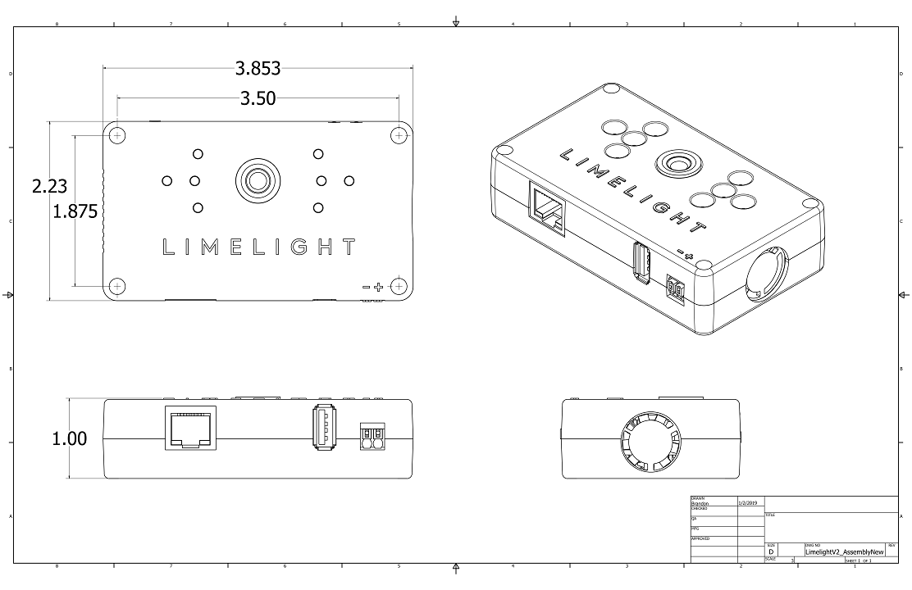Note
- What is the purpose of the status LEDs?
A. The green LED will blink quickly when a target has been acquired. The yellow LED will blink if the camera is set to use a dynamic IP address, and will stay solid if the camera is using a static IP address.
Use four 1 1/4” 10-32 screws and nylock nuts to mount your Limelight.
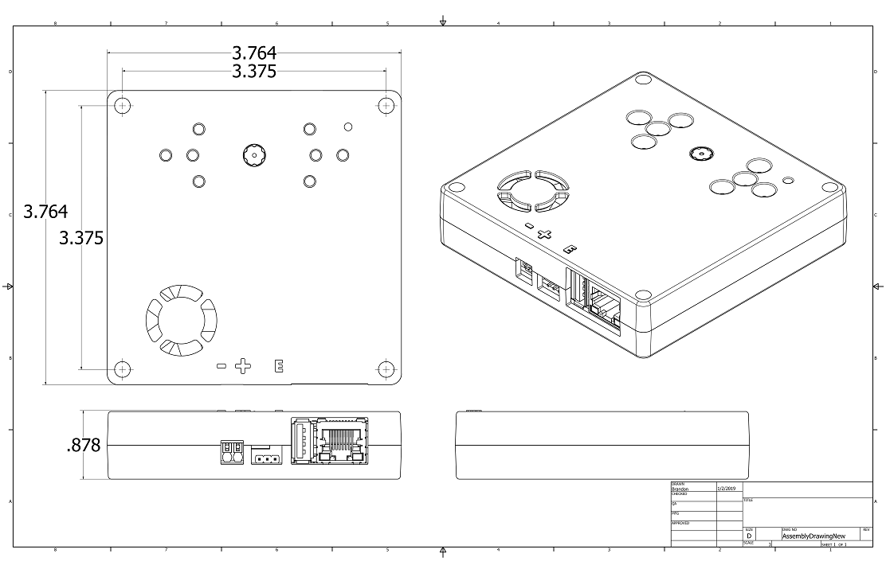Wiring¶
Note
Limelight takes a 12V input, but is built to function down to 6V. Its LEDs have a constant brightness down to 7V.
Warning
Do not use the REV radio power module to power your Limelight
- Do not run wires to your VRM.
- Run two wires from your limelight to a slot on your PDP (NOT your VRM).
- Add any breaker (5A, 10A, 20A, etc.) to the same slot on your PDP.
- Run an ethernet cable from your Limelight to your robot radio.
Note
PoE allows you to add both power and network connectivity to your Limelight via an Ethernet cable.
Warning
This is not standard 44V PoE - this is why you must use a passive injector with 12V.
- (LIMELIGHT 1 ONLY) Ensure that your Limelight’s power jumper is set to the “E” position.
- Connect a passive Passive PoE Injector to your PDP (NOT your VRM).
- Add any breaker (5A, 10A, 20A, etc.) to the same slot on your PDP.
- Run an ethernet cable from your Limelight to your passive POE injector.
Imaging¶
Note
Limelight will receive software updates for improvements and features to accomodate the game if necessary.
- Do not use a Windows 7 or Windows XP machine.
- Remove power from your limelight.
- Download the latest drivers, flasher tool, and image from from the Downloads Page.
- Install the latest Balena Etcher flash tool from the Downloads Page. The “installer” version is recommended.
- Run a USB-MicroUSB cable from your laptop to your limelight.
- Run “Balena Etcher” as an administrator.
- It may take up to 20 seconds for your machine to recognize the camera.
- Select the latest .zip image in your downloads folder
- Select a “Compute Module” device in the “Drives” menu
- Click “Flash”
- Once flashing is complete, remove the usb cable from your limelight.
Warning
Some versions of Limelight 1 are electrostatically sensitive around the micro-usb port. To prevent damaging the port, ground yourself to something metal before you connect to the micro usb port. This will ensure your personal static charge has been discharged.
- Do not use a Windows 7 or Windows XP machine.
- Remove power from your limelight.
- Download the latest drivers, flasher tool, and image from from the Downloads Page.
- Install the latest Balena Etcher flash tool from the Downloads Page. The “installer” version is recommended.
- Run a USB-MicroUSB cable from your laptop to your limelight.
- Apply power to your limelight.
- Run “Balena Etcher” as an administrator.
- It may take up to 20 seconds for your machine to recognize the camera.
- Select the latest .zip image in your downloads folder
- Select a “Compute Module” device in the “Drives” menu
- Click “Flash”
- Once flashing is complete, remove power from your limelight
Warning
Only connect the microUSB cable while imaging. Limelight enters a special flash mode while the microUSB cable is connected. You will not be able to access the web interface while Limelight is in flash mode.
Networking Setup¶
We highly reccomend following the static IP instructions for reliability during events.
Follow these steps before starting:
- Go to add/remove programs in windows, and search for “bonjour”
- How many items do you see?
- If there are two (2) items with “bonjour” in their names, uninstall “bonjour print services”
- If there are no (0) items with “bonjour” in their names, install bonjour from our Downloads page.
- Reboot your robot and computer.
- Download the Limelight Finder Tool
- Follow the steps listed below.
- Follow the bonjour-related instructions above.
- Power-up your robot, and connect your laptop to your robot’s network.
- After your Limelight flashes its LED array, open the Limelight Finder Tool and search for your Limelight or navigate to http://limelight.local:5801. This is the configuration panel.
- Navigate to the “Settings” tab on the left side of the interface.
- Enter your team number and press the “Update Team Number” button.
- Change your “IP Assignment” to “Static”.
- Set your Limelight’s IP address to “10.TE.AM.11”.
- Set the Netmask to “255.255.255.0”.
- Set the Gateway to “10.TE.AM.1”.
- Click the “Update” button.
- Give your roboRIO the following static IP address: “10.TE.AM.2”
- Power-cycle your robot.
- You will now be access your config panel at http://10.TE.AM.11:5801, and your camera stream at http://10.TE.AM.11:5800
- Follow the bonjour-related instructions above.
- Power-up your robot, and connect your laptop to your robot’s network.
- After your Limelight flashes its LED array, open the Limelight Finder Tool and search for your Limelight or navigate to http://limelight.local:5801. This is the configuration panel.
- Navigate to the “Settings” tab on the left side of the interface.
- Enter your team number and press the “Update Team Number” button.
- Change your “IP Assignment” to “Automatic”.
- Click the “Update” button.
- Power-cycle your robot.
- You can continue be access your config panel at http://limelight.local:5801, and your camera stream at http://limelight.local:5800
Note
- Why do we reccommend a static IP?
- First, it shaves multiple seconds off Limelight’s boot time. Second, teams have historically had issues with DHCP assignment and mDNS responders on actual FRC fields and with event radio firmware.
We recommend setting static IP addresses on your robo-rio and driverstation as well. The networking settings to use on all of these devices can be found near the bottom half of this web page: https://docs.wpilib.org/en/stable/docs/networking/networking-introduction/ip-configurations.html
Note
- How do I reset the IP address?
- After your Limelight has booted, hold the config button on the front face of the camera until the LEDs start blinking. Power-cycle your robot, and your Limelight will have an automatically-assigned IP address.
- If the above steps do not fix the problem, install Angry IP scanner and find the address for your limelight.
- Go to <limelightaddress>:5801, and give your limelight a .11 static IP.
- From this point onward, you can rely on the static IP to access the page.
Basic Programming¶
For now, we just need to get data from the camera to your robot. Limelight posts targeting data to Network Tables at 100hz. The default update rate for NetworkTables is 10hz, but Limelight automatically overwrites it to allow for more frequent data transfer.
To get started, we recommend reading four values from the “limelight” Network Table as frequently as possible. Our code samples will show you exactly how to do this. The offsets to your target (in degrees) are sent as “tx” and “ty”. These can be used to turn your robot, turn a turret, etc. The target’s area, sent as “ta”, may be used a rough indicator of distance to your target. Area is a value between 0 and 100, where 0 means that your target’s hull area is 0% of the total image area, and 100 means that your target’s hull fills the entire image. The rotation or “skew” of your target is returned as “ts”. If all values are equal to zero, no targets exist.
In addition, you may control certain features by setting values in NetworkTables. See the complete NT API here: Complete NetworkTables API
Read the following from the “limelight” table
| tv | Whether the limelight has any valid targets (0 or 1) |
| tx | Horizontal Offset From Crosshair To Target (-27 degrees to 27 degrees) |
| ty | Vertical Offset From Crosshair To Target (-20.5 degrees to 20.5 degrees) |
| ta | Target Area (0% of image to 100% of image) |
Write the following to the “limelight” table
| ledMode | Sets limelight’s LED state |
| 0 | use the LED Mode set in the current pipeline |
| 1 | force off |
| 2 | force blink |
| 3 | force on |
| camMode | Sets limelight’s operation mode |
| 0 | Vision processor |
| 1 | Driver Camera (Increases exposure, disables vision processing) |
| pipeline | Sets limelight’s current pipeline |
| 0 .. 9 | Select pipeline 0..9 |
Don’t forget to add these imports:
import edu.wpi.first.wpilibj.smartdashboard.SmartDashboard;
import edu.wpi.first.networktables.NetworkTable;
import edu.wpi.first.networktables.NetworkTableEntry;
import edu.wpi.first.networktables.NetworkTableInstance;
NetworkTable table = NetworkTableInstance.getDefault().getTable("limelight");
NetworkTableEntry tx = table.getEntry("tx");
NetworkTableEntry ty = table.getEntry("ty");
NetworkTableEntry ta = table.getEntry("ta");
//read values periodically
double x = tx.getDouble(0.0);
double y = ty.getDouble(0.0);
double area = ta.getDouble(0.0);
//post to smart dashboard periodically
SmartDashboard.putNumber("LimelightX", x);
SmartDashboard.putNumber("LimelightY", y);
SmartDashboard.putNumber("LimelightArea", area);
Don’t forget to add these #include directives:
#include "frc/smartdashboard/Smartdashboard.h"
#include "networktables/NetworkTable.h"
#include "networktables/NetworkTableInstance.h"
#include "networktables/NetworkTableEntry.h"
#include "networktables/NetworkTableValue.h"
#include "wpi/span.h"
std::shared_ptr<NetworkTable> table = nt::NetworkTableInstance::GetDefault().GetTable("limelight");
double targetOffsetAngle_Horizontal = table->GetNumber("tx",0.0);
double targetOffsetAngle_Vertical = table->GetNumber("ty",0.0);
double targetArea = table->GetNumber("ta",0.0);
double targetSkew = table->GetNumber("ts",0.0);
from networktables import NetworkTables
table = NetworkTables.getTable("limelight")
tx = table.getNumber('tx',None)
ty = table.getNumber('ty',None)
ta = table.getNumber('ta',None)
ts = table.getNumber('ts',None)
Building A Pipeline¶
To configure a limelight vision pipeline, first access its web interface at http://10.te.am.11:5801. If you have opted to use a dynamically assigned ip-address, access the interface at http://limelight.local:5801.
The “Tracking” page is comprised of five tuning tabs:
Input Tab¶
The Input Tab hosts controls to change the raw camera image before it is passed through the processing pipeline.
Pipeline Type¶
Controls the desired pipeline type. Change this option to utilize GRIP or Python Pipelines.
Source Image¶
Controls the source of the image that is passed through the pipeline. Switch to “Snapshot” to test your vision pipelines on stored Snapshots.
This control auto-resets to “Camera” when the GUI is closed.

Resolution + Zoom¶
Controls the resolution of the camera and vision pipeline. We recommend using the 320x240 pipeline unless you are utilizing 3D functionality.
320x240 pipelines execute at 90fps, while 960x720 pipelines execute at 22 fps. In 2020, 2x and 3x Hardware Zoom options were added to this field. The zoom options are not digital and use 100% real sensor pixels.

LEDs¶
Controls the default LED mode for this pipeline. This may be overidden during a match with the “LED” network table option.
Limelight 2+ users have access to an “LED Brightness” Slider which allows for LED dimming.
Orientation¶
Controls the orientation of incoming frames. Set it to “inverted” if your camera is mounted upside-down.

Exposure¶
Controls the camera’s exposure setting in .1 millisecond intervals. Think of a camera as a grid of light-collecting buckets - exposure time controls how long your camera’s “buckets” are open per frame. Lowering the exposure time will effectively darken your image. Low and fixed exposure times are crucial in FRC, as they black-out the bulk of incoming image data. Well-lit retroreflective tape will stand out in a mostly black image, turning vision processing into a straightforward process.

Black Level Offset¶
Increasing the black level offset can significantly darken your camera stream. This should be increased to further remove arena lights and bright spots from your image. This is a sensor-level setting, and not a fake digital brightness setting.

Red Balance, Blue Balance¶
Controls the intensity of Red and Blue color components in your image. These collecively control your Limelight’s white balance. We recommend leaving these at their default values of
Thresholding Tab¶
Thresholding is a critical component of most FRC vision tracking algorithms. It is the act of taking an image, and throwing away any pixels that aren’t in a specific color range. The result of thresholding is generally a one-dimensional image in which a pixel is either “on” or “off.

Video Feed (Located beneath stream)¶
Controls which image is streamed from the mjpeg server. You should switch to the “threshold” image if you need to tune your HSV thresholding.
Thresholding Wands¶
- Wands enable users to click on Limelights’s video stream to perform automatic HSV thresholding.
- The “Eyedropper” wand centers HSV parameters around the selected pixel
- The “Add” wand adjusts HSV parameters to include the selected pixel
- The “Subtract” wand adjust HSV paramters to ignore the selected pixel

Hue¶
Describes a “pure” color. A Hue of “0” describes pure red, and a hue of 1/3 (59 on the slider) describes pure green. Hue is useful because it doesn’t change as a pixel “brightens” or “darkens”. This is the most important parameter to tune. If you make your hue range as small as possible, you will have little if any trouble transitioning to an actual FRC field.
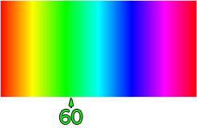Saturation¶
Describes the extent to which a color is “pure”. Another way to think of this is how washed-out a color appears, that is, how much “white” is in a color. Low saturation means a color is almost white, and high saturation means a color is almost “pure”.
Value¶
Describes the darkness of a color, or how much “black” is in a color. A low value corresponds to a near-black color. You should absolutely increase the minimum value from zero, so that black pixels are not passed through the processing pipeline.
Erosion and Dilation¶
Erosion slightly erodes the result of an HSV threshold. This is useful if many objects are passing through a tuned HSV threshold. Dilation slightly inflates the result of an HSV threshold. Use this to patch holes in thresholding results.

Hue Inversion¶
Use hue inversion to track red targets, as red exists at both the beginning and the end of the hue range.

Contour Filtering¶
After thresholding, Limelight generates a list of contours. After that, each contour is wrapped in a bounding rectangle an unrotated rectangle, and a “convex hull”. These are passed through a series of filters to determine the “best” contour. If multiple contours pass through all filters, Limelight chooses the best contour using the “Sort Mode” Control.
Sort Mode¶
Controls how contours are sorted after they are passed through all other filters.
In 2019, the “closest” sort mode was added. This mode will select the target that is closest to the configurable crosshair.

Target Area¶
Controls the range of acceptable bounding-rectangle areas, as percentages of the screen. You can increase the minimum area to help filter-out stadium lights, and decrease the maximum value to help filter-out things like large displays near the field.

Note
The area slider is not linearly scaled, but quarticly scaled. This is done to provide extra precision near the lower-end of area values, where many FRC targets lie. The area of a square scales quadratically with its side length, but x^4 scaling provides even greater precision where it is needed.
Target Fullness¶
Fullness is the percentage of “on” pixels in the chosen contour’s bounding rectangle. A solid rectangle target will have a near-1.0 fullness, while a U-shaped target will have a low fullness.

Target Aspect Ratio¶
Aspect ratio is defined by the width of the bounding rectangle of the chosen contour divided by its height. A low aspect ratio describes a “tall” rectangle, while a high aspect ratio describes a “wide” rectangle.

Note
The aspect ratio slider is also quadratically scaled.

Smart Speckle Rejection¶
Rejects relatively small (as opposed to absolutely small w/ the area filter) contours that have passed through all other filters. This is essential if a target must remain trackable from short-range and long-range. This feature was introduced in the 2019 season to reject Limelight’s LED reflections when robots were very close to targets.

Target Grouping¶
Controls target “grouping”. Set to dual mode to look for “targets” that consist of two shapes, or tri mode to look for targets that consist of three shapes.
Smart Target Grouping can group a variable number of targets and reject outliers. It was added in 2022 to help track the upper hub target.

Intersection Filter (Dual Targets Only)¶
Rejects groups of contours based on how they would intersect if extended to infinity.

Smart Target Grouping¶
- Automatically group targets that pass all individual target filters.
- Will dynamically group any number of targets between -group size slider minimum- and -group size slider maximum-

- Outlier Rejection
- While group targets are more challenging than normal targets, they provide more information and opportunities for filtering. If you know that a goal is comprised of multiple targets that are close to each other, you can actually reject outlier targets that stand on their own.
- You should rely almost entirely on good target filtering, and only use outlier rejection if you see or expect spurious outliers in your camera stream. If you have poor standard target filtering, outlier detection could begin to work against you!

Output¶
This tab controls what happens during the last stage of the vision pipeline
Targeting Region¶
Controls the point of interest of the chosen contour’s bounding rectangle. By default, the tracking parameters tx and ty represent the offsets from your crosshair to the center of the chosen rectangle. You can use another option if a target changes in size, or is comprised of two targets that sometimes blend together.

Send Raw Corners?¶
Set this control to “yes” to submit raw corners over network tables. Tune the number of corners submitted by adjusting the “Contour Simplification” value in the “Contour Filtering” page.
Send Raw Contours?¶
Set this control to “yes” to submit raw contours over network tables. The top 3 passing contours will be submitted.
Crosshair Calibration¶
Controls the “origin” of your targeting values. Let’s say a shooter on your robot needs to be calibrated such that it always points a bit left-of-center. You can line up your robot, click “calibrate,” and all of your targeting values will be sent relative to your new crosshair. See the calibration page for more details!

3D¶
Experiment with PnP point-based pose estimation here.

Compute 3D¶
Controls whether pose estimation is enabled. You must enable the 960x720 high-res mode for this to work.
Force Convex¶
Use this option to select only the “outermost” corners of a target for SolvePnP.
Contour Simplification¶
Use this option to remove small, noisy edges from the target.
Acceptable Error¶
Limelight will only return a target if it passes a reprojection test with a certain score in pixels.
Camera Matricies (Advanced Users)¶
cameraMatrix = cv::Matx33d(
772.53876202, 0., 479.132337442,
0., 769.052151477, 359.143001808,
0., 0., 1.0);
distortionCoefficient = std::vector<double> {
2.9684613693070039e-01, -1.4380252254747885e+00,-2.2098421479494509e-03,
-3.3894563533907176e-03, 2.5344430354806740e+00};
focalLength = 2.9272781257541; //mm
cameraMatrix = cv::Matx33d(
8.8106888208290547e+02, 0., 4.8844767170376019e+02,
0., 8.7832357838726318e+02, 3.5819038625928994e+02,
0., 0., 1.);
distortionCoefficient = std::vector<double> {
1.3861168261860063e-01, -5.4784067711324946e-01,
-2.2878279907387667e-03, -3.8260257487769065e-04,
5.0520158005588123e-01 };
focalLength = 3.3385168390258093; //mm
Crosshair Calibration¶
Limelight’s crosshairs turn calibration into a seamless process. Rather than storing offsets in their code, teams can line-up their robots perfectly by hand (or by joystick), and click the “calibrate” button.
Calibrating a crosshair moves the “zero” of your targeting data. This is very useful if your Limelight isn’t perfectly centered on your robot.
Single Crosshair Mode¶
Line-up your robot at its ideal scoring location+rotation, and click “calibrate”. Now a tx and ty of “zero” equate to a perfectly aligned robot. If your robot needs to be recalibrated for a new field, simply take a practice match to find the perfect alignment for your robot, and click “calibrate” during your match.
Dual Crosshair Mode¶
Imagine a robot with an off-axis camera or shooter that needs to shoot gameobjects into a goal from many positions on the field. As the robot approaches the goal, its crosshair must adjust in real-time to compensate. Dual crosshair mode is built for this functionality. Line-up your robot at its closest scoring position+rotation, and calibrate crosshair “A”. Line-up your robot at its farthest scoring position+rotation, and calibrate crosshair “B”. When you calibrate in dual-crosshair mode, crosshairs also store an area value. You will notice that as your robot moves between its min and max scoring distances, the crosshair moves between crosshair “A” and crosshair “B”. This is done by checking the area of the target, and comparing it to the two target areas seen during calibration.
Using Multiple Pipelines¶
Limelight can store up to ten unique vision pipelines for different goals, different fields, or different robots. Change pipelines mid-match by changing the “pipeline” value in NetworkTables.
To edit multiple pipelines, you must first check the “Ignore NetworkTables Index” checkbox in the web interface. This will force the robot to temporarily allow you to change the pipline index through the webinterface rather than through NetworkTables.
To download your pipelines for backups and sharing, simply click the “download” button next to your pipeline’s name. To upload a pipeline, click the “upload” button.
Here’s an example of a robot that utilizes two pipelines:

The first pipeline is tuned to target single vertical stripes. The second pipeline is tuned to find a combo of two horizontal stripes. The code for this robot is available in the “Aim and Range” case study.
Notice that when the robot switches pipelines, the web interface auto-loads the new pipeline.
Best Practices¶
Before An Event¶
- Download and backup all pipelines to your programming laptop.
- Download a copy of the latest Limelight image to your programming laptop.
- Record a list of your pipelines and their indicies.
- 1 - Dual Target Low
- 2 - Dual Target High Cargo
- Add strain reliefs to all power and ethernet cables going to your LL.
- Consider hot-gluing all connections.
- Make sure you are using a dashboard (Smartdashboard, Shuffleboard) and not a web browser to view the stream while practicing and during events. Default web controls don’t have the ability to auto-reconnect to streams after spurious disconnections, but SmartDashboard and Shuffleboard both have auto-reconnection built-in by default.
- Add a network switch to your robot to enable ethernet tethering while at an event and to avoid the second radio port. We recommend the Branboxes SW-005 5 port Switch
- We do not recommend use of the second radio port. Route all devices through your network switch if possible.
- Setup Port Forwarding to enable Limelight communication while tethered to your robot over USB.
- Forward ports 5800, 5801, 5802, 5803, 5804, and 5805
import edu.wpi.first.wpiutil.net.PortForwarder;
@Override
public void robotInit()
{
// Make sure you only configure port forwarding once in your robot code.
// Do not place these function calls in any periodic functions
PortForwarder.add(5800, "limelight.local", 5800);
PortForwarder.add(5801, "limelight.local", 5801);
PortForwarder.add(5802, "limelight.local", 5802);
PortForwarder.add(5803, "limelight.local", 5803);
PortForwarder.add(5804, "limelight.local", 5804);
PortForwarder.add(5805, "limelight.local", 5805);
}
#include <wpi/PortForwarder.h>
void Robot::RobotInit
{
wpi::PortForwarder::GetInstance().Add(5800, "limelight.local", 5800);
wpi::PortForwarder::GetInstance().Add(5801, "limelight.local", 5801);
wpi::PortForwarder::GetInstance().Add(5802, "limelight.local", 5802);
wpi::PortForwarder::GetInstance().Add(5803, "limelight.local", 5803);
wpi::PortForwarder::GetInstance().Add(5804, "limelight.local", 5804);
wpi::PortForwarder::GetInstance().Add(5805, "limelight.local", 5805);
}
During Event Calibration¶
- Roll your robot to each target on the field.
- Make sure your thresholding is working properly. Switch to the “threshold” view during this process (located under the image stream).
- Roll your robot close to the target, and far away from the target. Ensure crosshairs are calibrated properly.
- While far away from the target, rotate your robot left and right ~ 30 degrees to ensure that other targets will not be erroneously tracked.
- See the tuning section below for more tuning tips.
- Ensure no other field / arena elements are being accidentally tracked. Check your area and aspect ratio filters if you are picking up arena lights.
- Take snapshots of all targets and erroneous targeting. You can use these to tune your pipelines in the pits.
Pipeline Tuning¶
- Use the lowest exposure possible, and increase black level offset until field lights and LED reflections are removed from the image.
- Test your thresholding while far away and angled away from your target.
- Use 2019.7’s “Smart Speckle Rejection” to filter unwanted LED reflections
Before Connecting to the Field¶
- Give your laptop a static IP configuration.
- IP: 10.TE.AM.5
- Subnet Mask: 255.0.0.0
- Gateway: 10.TE.AM.1
- Give your RIO a static IP configuration.
- IP: “10.TE.AM.2”
- Subnet Mask: 255.255.255.0 <- NOTE THE DIFFERENCE HERE
- Gateway: 10.TE.AM.1
- Give your Limelights unique hostnames (if using multiple).
- Give your Limelights unique static IP configurations.
- Always start with “.11” addresses and go upward. (10.9.87.11, etc.)
- The use of other addresses may cause your units to malfunction when connected to the FMS.
- IP: “10.TE.AM.11”
- Subnet mask: 255.255.255.0
- Gateway: “10.TE.AM.1”
Additional information: https://docs.wpilib.org/en/stable/docs/networking/networking-introduction/ip-configurations.html
Before Every Match¶
- Check all power and Ethernet cables going to your Limelights.
- Check all electrical connections for looseness and frayed wires.
- Check all mounting screws / zipties / tape.
- Observe ESD precautions at all times.
Bandwidth¶
- Some teams run two Limelights with two USB cameras while staying well under under the bandwidth limit. Follow the steps below to reduce bandwidth.
- Rather than using driver mode, create a “driver” pipeline. Turn down the exposure to reduce stream bandwidth.
- Using a USB camera? Use the “stream” NT key to enable picture-in-picture mode. This will dramatically reduce stream bandwidth.
- Turn the stream rate to “low” in the settings page if streaming isn’t critical for driving.
- Use the 160x120 stream option introduced in 2019.7.
Troubleshooting¶
- Try to access the stream at <IP>:5800 with a web browser. This should help you determine the root of your issues.
- Restart your dashboard
- Reboot your computer
- Reboot your robot if the field has been reset
- Broken Ethernet cables can be the cause of intermittent networking issues.
- Always use static IP configurations on the field.
Additional Theory¶
Vision Targets¶
The FRC game designers often place reflective “vision targets” on the field in strategic locations. These vision targets are usually made out of retro-reflective tape. Major scoring elements generally have vision targets that can be used to automatically aim. Below you can see two examples of some of the vision targets from the 2016 and 2017 FRC games.
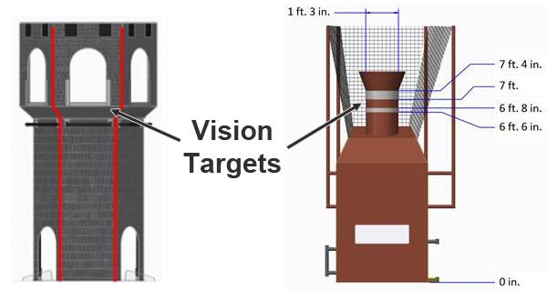These retro-reflective vision targets have a very useful property: when light is shined at them, it will reflect directly back to the light source. This is why Limelight has bright green LEDs surrounding its camera lens. By setting the camera exposure very low while emitting a bright green light toward the target, we can aquire an image that is mostly black with a bright green vision target. This makes the job of aquiring the target relatively easy.
Here you can see an example of the ideal of image. Notice how almost all of the detail in the image is gone due to the low exposure setting but the retro-reflective tape stands out brightly.
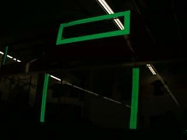Thresholding¶
Thresholding is the next critical component of most FRC vision tracking algorithms. It is the act of taking an image, and throwing away any pixels that aren’t in a specific color range. The result of thresholding is generally a one-dimensional image in which a pixel is either “on” or “off. Thresholding works very well on images that are captured using the above strategy (low exposure, very dark image with a brightly illuminated vision target)
Limelight does thresholding in the HSV (Hue-Saturation-Value) colorspace. You may be used to thinking of colors in the RGB (Red-Green-Blue) colorspace. HSV is just another way of representing color similar to the way cartesian coordinates or polar coordinates can be used to describe positions. The reason we use the HSV colorspace is that the Hue can be used to very tightly select the green color that Limelight’s leds output.
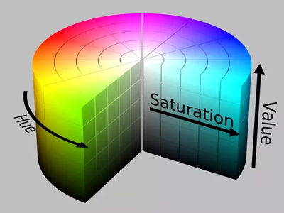It is critical to adjust your thresholding settings to eliminate as much as you can from the image. You will get the best results if you optimize each stage of your vision pipeline before moving to the next stage. The following image depicts the difference between improper and proper thresholding:
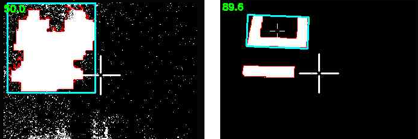Sometimes things like ceiling lights or windows in an arena can be difficult to remove from the image using thresholding, which brings us to the next stage.
Contour Filtering¶
After thresholding, Limelight’s vision pipeline generates a set of contours for the image. A contour in is a curve surrounding a contiguous set of pixels. Sometimes things like ceiling lights, arena scoreboards, windows and other things can make it past the thresholding step. This is where contour filtering becomes useful. The goal is to eliminate any contours which we know are not the target we are interested in.
The first and easiest countour filter is to ignore any contours which are smaller than what our vision target looks like from our scoring distance. Anything smaller than that size is obviously something farther away and should be ignored. This is called area filtering.
The FRC vision targets often have some geometric property that can be exploited to help us filter contours. For example, if the vision target has a wide aspect ratio, we can filter out any contours that are not wide:
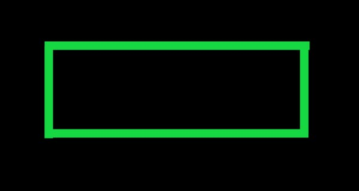However, keep in mind that your camera may be looking at the target from an odd angle. This can drastically affect the aspect ratio of its contour. Be sure to test your settings from a variety of angles to ensure that you do not filter too aggressively and end up ignoring the vision target!
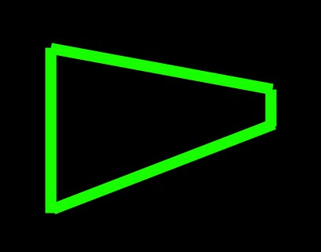This next image target is very interesting. It is one of the best designed vision targets in FRC (in our opinion). Limelight automatically calculates a value called the fullness of a contour. Fullness is the ratio between the pixel area of the contour to its convex area. This particular shape has a very low fullness and you almost never see any ceiling lights, windows, etc with such a low fullness. So you can very effectively filter out the unwanted contours if your vision target looks like this one.
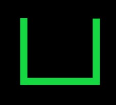Limelight has many options for filtering contours. You can use these options along with what you know about the geometry properties of the particular vision target you are trying to track.
Currently, if multiple contours pass through your filtering options, the largest contour is chosen. In addition, the pipeline prefers to “lock” onto contours using hysteresis. This is a feature that helps prevent flickering between similar targets.
From Pixels to Angles¶
The end result of the vision pipeline is a pixel location of the best contour in the image. For most games, we can just aim at the center of the contour. Sometimes it is also useful to aim at the top-center or some other point but essentially we have a pixel coordinate for where we want to aim. In order to compute the angles to this target, we need to use a little bit of trigonometry.
First we assume that we have a perfect “pinhole” camera. In practice this can be far from the truth but the limelight’s camera is very close. (A fisheye lens would be far from this ideal as a counter-example.)
The limelight camera has a horizontal field of view of 54 degrees and a vertical field of view of 41 degrees. It captures images at 320x240 resolution. We assume the center of the image is the optical azis of the camera (so the x and y angles for that location are 0,0). Given these known values, we can use a little trigonometry to compute the angles for any pixel in the image.
The below diagram shows an example target point which we want to compute angles for. Pixel coordinates start at the upper left corner of the image and are positive to the right and down.
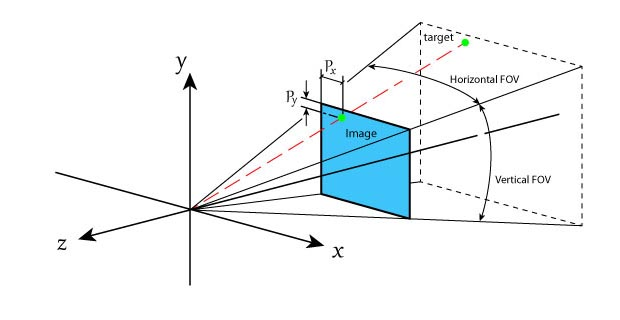Our first step will be to convert from pixel coordinates to normalized 2D coordinates where 0,0 is the center of the image and 1.0:
(px,py) = pixel coordinates, 0,0 is the upper-left, positive down and to the right
(nx,ny) = normalized pixel coordinates, 0,0 is the center, positive right and up
nx = (1/160) * (px - 159.5)
ny = (1/120) * (119.5 - py)
Next we define an imaginary view plane and compute its size. For simplicity, we can choose to place this plane 1.0 unit in front of the camera location. Here is a view looking down on the camera. Our goal is to compute the view plane width and height as those values will be used to compute the angles later:
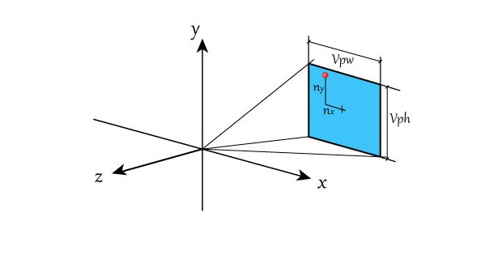Given a distance of 1.0 unit and a known horizontal and vertical fov, we can compute the size of the view plane rectangle the following formulas:
vpw = 2.0*tan(horizontal_fov/2)
vph = 2.0*tan(vertical_fov/2)
Using these two values, we can now convert between normalized pixel coordinates and view plane coordinates using a simple multiply.
x = vpw/2 * nx;
y = vph/2 * ny;
Remember that we chose our view plane to be positioned at a distance of 1.0. Now we have everything we need to compute the angles to the target point.
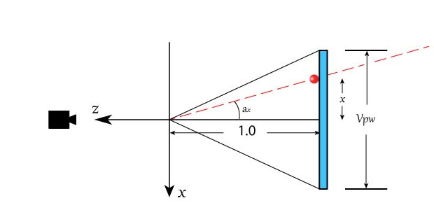tan(ax) = x / 1
tan(ay) = y / 1
ax = atan2(1,x)
ay = atan2(1,y)
Complete NetworkTables API¶
“Best” Contour information:
Use the following code:
NetworkTableInstance.getDefault().getTable("limelight").getEntry("<variablename>").getDouble(0);
nt::NetworkTableInstance::GetDefault().GetTable("limelight")->GetNumber("<variablename>",0.0);
NetworkTables.getTable("limelight").getNumber('<variablename>');
to retrieve this data:
| tv | Whether the limelight has any valid targets (0 or 1) |
| tx | Horizontal Offset From Crosshair To Target (LL1: -27 degrees to 27 degrees | LL2: -29.8 to 29.8 degrees) |
| ty | Vertical Offset From Crosshair To Target (LL1: -20.5 degrees to 20.5 degrees | LL2: -24.85 to 24.85 degrees) |
| ta | Target Area (0% of image to 100% of image) |
| ts | Skew or rotation (-90 degrees to 0 degrees) |
| tl | The pipeline’s latency contribution (ms) Add at least 11ms for image capture latency. |
| tshort | Sidelength of shortest side of the fitted bounding box (pixels) |
| tlong | Sidelength of longest side of the fitted bounding box (pixels) |
| thor | Horizontal sidelength of the rough bounding box (0 - 320 pixels) |
| tvert | Vertical sidelength of the rough bounding box (0 - 320 pixels) |
| getpipe | True active pipeline index of the camera (0 .. 9) |
| camtran | Results of a 3D position solution, NumberArray: Translation (x,y,z) Rotation(pitch,yaw,roll) |
| tc | Get the average HSV color underneath the crosshair region as a NumberArray |
Camera Controls¶
Use the following code:
NetworkTableInstance.getDefault().getTable("limelight").getEntry("<variablename>").setNumber(<value>);
nt::NetworkTableInstance::GetDefault().GetTable("limelight")->PutNumber("<variablename>",<value>);
NetworkTables.getTable("limelight").putNumber('<variablename>',<value>);
to set this data:
| ledMode | Sets limelight’s LED state |
| 0 | use the LED Mode set in the current pipeline |
| 1 | force off |
| 2 | force blink |
| 3 | force on |
| camMode | Sets limelight’s operation mode |
| 0 | Vision processor |
| 1 | Driver Camera (Increases exposure, disables vision processing) |
| pipeline | Sets limelight’s current pipeline |
| 0 .. 9 | Select pipeline 0..9 |
| stream | Sets limelight’s streaming mode |
| 0 | Standard - Side-by-side streams if a webcam is attached to Limelight |
| 1 | PiP Main - The secondary camera stream is placed in the lower-right corner of the primary camera stream |
| 2 | PiP Secondary - The primary camera stream is placed in the lower-right corner of the secondary camera stream |
| snapshot | Allows users to take snapshots during a match |
| 0 | Reset snapshot mode |
| 1 | Take exactly one snapshot |
| crop | Sets the crop rectangle. The pipeline must utilize the default crop rectangle in the web interface. The array must have exactly 4 entries. |
| [0] | X0 - Min or Max X value of crop rectangle (-1 to 1) |
| [1] | X1 - Min or Max X value of crop rectangle (-1 to 1) |
| [2] | Y0 - Min or Max Y value of crop rectangle (-1 to 1) |
| [3] | Y1 - Min or Max Y value of crop rectangle (-1 to 1) |
Python¶
Python scripts allow for arbitrary inbound and outbound data.
| llpython | NumberArray sent by python scripts. This is accessible from robot code. |
| llrobot | NumberArray sent by the robot. This is accessible from python scripts. |
Corners¶
Enable “send contours” in the “Output” tab to stream corner coordinates:
| tcornxy | Number array of corner coordinates [x0,y0,x1,y1……] |
Advanced Usage with Raw Contours¶
Raw Targets:
Limelight posts three raw contours to NetworkTables that are not influenced by your grouping mode. That is, they are filtered with your pipeline parameters, but never grouped. X and Y are returned in normalized screen space (-1 to 1) rather than degrees.
| tx0 | Raw Screenspace X |
| ty0 | Raw Screenspace Y |
| ta0 | Area (0% of image to 100% of image) |
| ts0 | Skew or rotation (-90 degrees to 0 degrees) |
| tx1 | Raw Screenspace X |
| ty1 | Raw Screenspace Y |
| ta1 | Area (0% of image to 100% of image) |
| ts1 | Skew or rotation (-90 degrees to 0 degrees) |
| tx2 | Raw Screenspace X |
| ty2 | Raw Screenspace Y |
| ta2 | Area (0% of image to 100% of image) |
| ts2 | Skew or rotation (-90 degrees to 0 degrees) |
Raw Crosshairs:
If you are using raw targeting data, you can still utilize your calibrated crosshairs:
| cx0 | Crosshair A X in normalized screen space |
| cy0 | Crosshair A Y in normalized screen space |
| cx1 | Crosshair B X in normalized screen space |
| cy1 | Crosshair B Y in normalized screen space |
Case Study: Estimating Distance¶
Using a Fixed Angle Camera¶
If your vision tracking camera is mounted on your robot such that the angle between the ground plane and its line of sight does not change, then you can use this technique to very accurately calculate the distance to a target. You can then use this distance value to either drive your robot forward and back to get into the perfect range or adjust the power of a launching mechanism.
See the below diagram. In this context, all of the variables are known: the height of the target (h2) is known because it is a property of the field. The height of your camera above the floor (h1) is known and its mounting angle is known (a1). The limelight (or your vision system) can tell you the y angle to the target (a2).
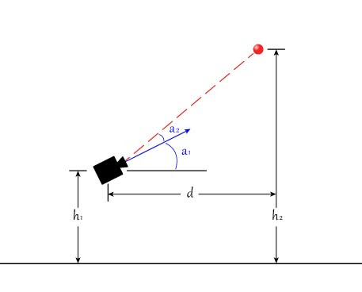We can solve for d using the following equation:
tan(a1+a2) = (h2-h1) / d
d = (h2-h1) / tan(a1+a2)
The tan function usually expects an input measured in radians. To convert an angle measurement from degrees to radians, multiply the angle measurement by (3.14159/180.0). See the full code example below.
NetworkTable table = NetworkTableInstance.getDefault().getTable("limelight");
NetworkTableEntry ty = table.getEntry("ty");
double targetOffsetAngle_Vertical = ty.getDouble(0.0);
// how many degrees back is your limelight rotated from perfectly vertical?
double limelightMountAngleDegrees = 25.0;
// distance from the center of the Limelight lens to the floor
double limelightLensHeightInches = 20.0;
// distance from the target to the floor
double goalHeightInches = 60.0;
double angleToGoalDegrees = limelightMountAngleDegrees + targetOffsetAngle_Vertical;
double angleToGoalRadians = angleToGoalDegrees * (3.14159 / 180.0);
//calculate distance
double distanceFromLimelightToGoalInches = (goalHeightInches - limelightHeightInches)/Math.tan(angleToGoalRadians);
std::shared_ptr<NetworkTable> table = nt::NetworkTableInstance::GetDefault().GetTable("limelight");
double targetOffsetAngle_Vertical = table->GetNumber("ty",0.0);
// how many degrees back is your limelight rotated from perfectly vertical?
double limelightMountAngleDegrees = 25.0;
// distance from the center of the Limelight lens to the floor
double limelightLensHeightInches = 20.0;
// distance from the target to the floor
double goalHeightInches = 60.0;
double angleToGoalDegrees = limelightMountAngleDegrees + targetOffsetAngle_Vertical;
double angleToGoalRadians = angleToGoalDegrees * (3.14159 / 180.0);
//calculate distance
double distanceFromLimelightToGoalInches = (goalHeightInches - limelightHeightInches)/tan(angleToGoalRadians);
When using this technique it is important to choose the mounting angle of your camera carefully. You want to be able to see the target both when you’re too close and too far away. You also do not want this angle to change, so mount it securely and avoid using slots in your mounting geometry.
If you are having trouble figuring out what the angle a1 is, you can also use the above equation to solve for a1. Just put your robot at a known distance (measuring from the lens of your camera) and solve the same equation for a1.
In the case where your target is at nearly the same height as your camera, this technique is not useful.
Using Area to Estimate Distance¶
Another simple way to estimate distance is to use the area of the contour you are tracking. This is a very simple method to implement but it does not give you extremely accurate results. All you do is point your vision camera at the target from a known distance and take note of the area of the blob. Make sure you’re using an accurate representation of the real field’s vision target and make sure you’re pointing at it from your desired shooting location. You can then do this from a few different distances and make a table out of these values. In 2016 we used this method to adjust the aim of our 2-axis turret based on how far from the goal we were.
Case Study: Aiming Using Vision¶
- You can accurately and quickly aim your robot using only a limelight and your drivetrain.
- We added the limelight to a robot, implemented the code and tuned it in less than 1hr.
Using high-framerate vision tracking, it is now possible to use the vision pipeline directly as the “sensor” in a PID control loop to guide your robot or turret. In order to test this idea we added a limelight to our 2017 FRC robotand made it aim at vision targets using nothing more than the drivetrain and the networks table data being reported by the limelight.
In this example, our test candidate was a 2017 FRC robot which uses a 6-wheel drivetrain with colson wheels. Here is a picture of us adding a limelight onto the robot in order to do this test.
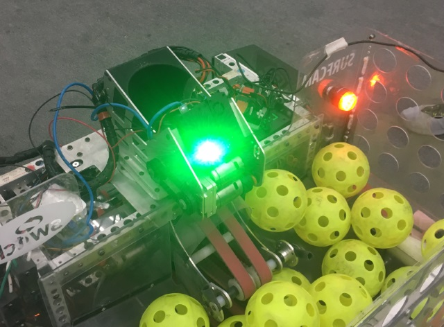Next we added some code to the robot which would run whenever the driver holds a button on the joystick. This robot used “tank” style driving so the OperatorControl function was generating a ‘left_command’ value and a ‘right_command’ value to control the left and right sides of the drivetrain. After the normal control code, we added a block of code like this:
float Kp = -0.1f; // Proportional control constant
std::shared_ptr<NetworkTable> table = NetworkTable::GetTable("limelight");
float tx = table->GetNumber("tx");
if (joystick->GetRawButton(9))
{
float heading_error = tx;
steering_adjust = Kp * tx;
left_command+=steering_adjust;
right_command-=steering_adjust;
}
Right off the bat, this mostly worked. The robot turns in the direction of the target automatically whenever you are holding the button. If you move the target around, the robot turns to follow the target. However, using the live video feed on the dashboard, we could see that there was one big problem: The robot wasn’t always making it all the way to perfectly align with the target. In some games with small targets, (like 2016 and 2017) this wouldn’t be good enough.
What we have implemented so far is a simple proportional control loop. We calculated the error in heading and multiplied that by a constant, thus making a motor command which is proportional to the error. As the error goes to zero, our command will go to zero. The problem is that there is a lot of friction involved when the robot tries to turn. Very small commands will not turn the robot at all. At small angles, the command can become too small to actually move the robot. You might find that your robot reaches its target well when you start out with a large targeting error but it just can’t aim at all if you start out really close.
There are a few ways to solve this problem but here is a really simple solution. We used a concept the “minimum command”. If the error is bigger than some threshhold, just add a constant to your motor command which roughly represents the minimum amount of power needed for the robot to actually move (you actually want to use a little bit less than this). The new code looks like this:
float Kp = -0.1f;
float min_command = 0.05f;
std::shared_ptr<NetworkTable> table = NetworkTable::GetTable("limelight");
float tx = table->GetNumber("tx");
if (joystick->GetRawButton(9))
{
float heading_error = -tx;
float steering_adjust = 0.0f;
if (tx > 1.0)
{
steering_adjust = Kp*heading_error - min_command;
}
else if (tx < 1.0)
{
steering_adjust = Kp*heading_error + min_command;
}
left_command += steering_adjust;
right_command -= steering_adjust;
}
Beware, if you set Kp or min_command too high, your robot can become unstable and can oscillate back and forth as it overshoots the target:
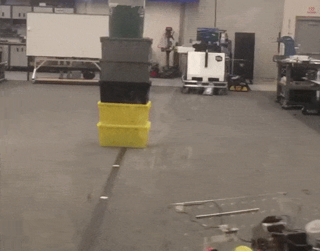After some tuning on Kp and min_command should get your robot aiming directly at the target very accurately and quickly.

Case Study: Seeking¶
- Use a seeking behavior to find a target that is not initially visible to the camera.
Implementing a seeking behavior can be useful in a few situtations. In some games, the goal you are trying to score into may not be in a predictable location so you can’t rely on dead-reconing autonomous code to get “close enough”. In 2009 for example, the goals were attached to the opponents robots which also driving around. Another reason you might want to implement seeking is if your robot’s drivetrain is not reliable/repeatable enough to put you in exactly the location you want. Sometimes swerve drives or omni-directional drives can have trouble driving to presice locations (this is not a knock on swerve or omni-directional drivetrains; it is just more challenging to get them to drive to repeatable locations). Some games have even allowed robot-robot interaction during autonomous mode. In 2006 we often engaged in autonomous duels where the defense robots would try to knock the offense robots out of scoring position. In this case you can’t be sure of anything! Hopefully this gets you thinking about some ways that having your robot automatically seek for a goal that it can’t initially see might be useful.
Luckily, adding seeking logic to your robot is very easy. To implement seeking, you simply have your robot scan for a target and once it finds it, start running the aiming code. We will use the ‘tv’ or ‘target valid’ value reported by limelight to know if we see a target or not.
std::shared_ptr<NetworkTable> table = NetworkTable::GetTable("limelight");
float tv = table->GetNumber("tv");
float tx = table->GetNumber("tx");
float steering_adjust = 0.0f;
if (tv == 0.0f)
{
// We don't see the target, seek for the target by spinning in place at a safe speed.
steering_adjust = 0.3f;
}
else
{
// We do see the target, execute aiming code
float heading_error = tx;
steering_adjust = Kp * tx;
}
left_command+=steering_adjust;
right_command-=steering_adjust;
Note that if your aiming code includes correcting the distance to the target, the robot behavior will be seeking followed by driving to the shooting distance as it aligns with the target. All of this can be achieved with the very simple code shown above.
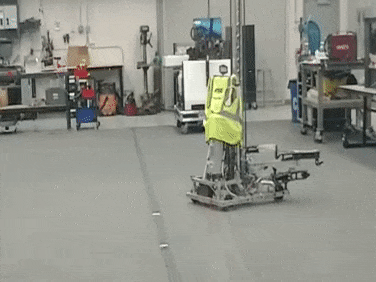Case Study: Getting in Range¶
- Have your robot automatically drive to a desired distance from the target.
- A very simple trick using a calibrated cross-hair.
FRC robots often need to be positioned a specific distance from a scoring goal in order for their scoring mechanism to work well. You can use a simple proportional control loop along with limelight’s calibrated cross-hair to very easily have your robot drive to a specific distance from the goal.
For this example, you should make sure that your robot is aimed at the goal. Later we will combine aiming and distance adjust into one function but for this example we are focusing only on the code that drives the robot to the correct distance.
Similar to the aiming example, here we show a function which can be run in your robot’s update loop.
float KpDistance = -0.1f; // Proportional control constant for distance
float current_distance = Estimate_Distance(); // see the 'Case Study: Estimating Distance'
if (joystick->GetRawButton(9))
{
float distance_error = desired_distance - current_distance;
driving_adjust = KpDistance * distance_error;
left_command += distance_adjust;
right_command += distance_adjust;
}
With some tuning of the KpDistance setting, your robot should very quickly and accurately drive to the desired distance. Compared to aiming, driving to the correct distance is usually easier because most robots drive forward and backward much easier than they turn in place.
Next we’ll describe a simple trick to make driving to the correct distance even easier. Instead of actually calculating the distance, you can use the limelight cross-hair. Just position your robot at your idea distance from the target and calibrate the y-position of the cross-hair. Now your y-angle will report as 0.0 when your robot is at the corect distance. Using this trick, you don’t ever have to actually calculate the actual distance and your code can look something like this:
float KpDistance = -0.1f;
std::shared_ptr<NetworkTable> table = NetworkTable::GetTable("limelight");
float distance_error = table->GetNumber("ty");
if (joystick->GetRawButton(9))
{
driving_adjust = KpDistance * distance_error;
left_command += distance_adjust;
right_command += distance_adjust;
}
If you need to change the shooting distance, just move your robot to the new distance and re-calibrate the limelight crosshair.

Here is an example of a robot using the above idea. Note how it backs up to the correct range automatically when the driver stops driving and presses the “aim” button:
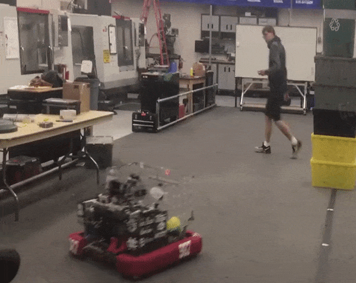Case Study: Aiming and Range at the same time.¶
- Put aiming and range adjustment into one function.

This example uses code from the aiming and range adjustment examples and puts everything together into one simple function. Using this, you can get your robot “close” and then use code to automatically aim and drive to the correct distance.
float KpAim = -0.1f;
float KpDistance = -0.1f;
float min_aim_command = 0.05f;
std::shared_ptr<NetworkTable> table = NetworkTable::GetTable("limelight");
float tx = table->GetNumber("tx");
float ty = table->GetNumber("ty");
if (joystick->GetRawButton(9))
{
float heading_error = -tx;
float distance_error = -ty;
float steering_adjust = 0.0f;
if (tx > 1.0)
{
steering_adjust = KpAim*heading_error - min_aim_command;
}
else if (tx < -1.0)
{
steering_adjust = KpAim*heading_error + min_aim_command;
}
float distance_adjust = KpDistance * distance_error;
left_command += steering_adjust + distance_adjust;
right_command -= steering_adjust + distance_adjust;
}
Case Study: 2017 Fuel Robot¶
- Entire c++ robot program which implements 2017 fuel scoring.
In this example, we present a complete robot program which implements the 2017 boiler goal. We tested this program on the 987 steamworks robot and were able to easily score fuel in the boiler. For this example we aim and move into range using the robot’s drivetrain. One thing that was immediately apparent to us is that limelight let us implement this feature in a tiny fraction of the amount of code and time compared to our real 2017 robot.
There are also a couple of other features in the code below such as the ability to blink the LEDs and dynamically toggle between multiple vision pipelines. This example also shows how to use a Talon SRX speed controller along with a magnetic encoder to control the RPM of the shooter wheel.
#include <iostream>
#include <string>
#include <Drive/DifferentialDrive.h>
#include <Joystick.h>
#include <SampleRobot.h>
#include <SmartDashboard/SendableChooser.h>
#include <SmartDashboard/SmartDashboard.h>
#include <Spark.h>
#include <Victor.h>
#include <Timer.h>
#include "ctre/phoenix/MotorControl/CAN/TalonSRX.h"
//
#define Vic_Drive_Left_1 0
#define Vic_Drive_Left_2 1
#define Vic_Drive_Right_1 2
#define Vic_Drive_Right_2 3
#define Tal_Shooter_Wheel 21
#define Tal_Shooter_Wheel_2 2
#define Tal_Intake 3
#define Tal_Uptake 9
class Robot : public frc::SampleRobot
{
public:
Robot() :
LeftDrive(Vic_Drive_Left_1),
RightDrive(Vic_Drive_Right_1),
LeftDrive2(Vic_Drive_Left_2),
RightDrive2(Vic_Drive_Right_2),
Shooter(Tal_Shooter_Wheel),
Shooter_2(Tal_Shooter_Wheel_2),
Intake(Tal_Intake),
Uptake(Tal_Uptake)
{
// This code sets up two Talons to work together and implement PID RPM control
Shooter.SetControlMode(CTRE::MotorControl::ControlMode::kSpeed);
Shooter_2.SetControlMode(CTRE::MotorControl::ControlMode::kFollower);
Shooter_2.Set(Tal_Shooter_Wheel);
Shooter.SetClosedLoopOutputDirection(false);
Shooter.SetStatusFrameRateMs(CTRE::MotorControl::CAN::TalonSRX::StatusFrameRateAnalogTempVbat,10);
Shooter.SetFeedbackDevice(CTRE::MotorControl::CAN::TalonSRX::CtreMagEncoder_Relative);
SetShooterConstants(.0002f, .00009f, .0000f, .000006f); // P,I,D,F constants for the shooter wheel
Shooter.SetAllowableClosedLoopErr(10);
Shooter.ConfigNominalOutputVoltage(+0.f,-0.f);
Shooter.ConfigPeakOutputVoltage(+12.f,-12.f);
Shooter.SelectProfileSlot(0);
Shooter.SetSensorDirection(true);
Shooter.SetVoltageRampRate(100);
Shooter.SetIzone(300);
Shooter_2.SetVoltageRampRate(100);
}
void RobotInit()
{
}
void Autonomous()
{
}
/*
* Operator Control
*/
void OperatorControl() override
{
while (IsOperatorControl() && IsEnabled())
{
// Read the joysticks!
float left_command = m_stickLeft.GetY();
float right_command = m_stickRight.GetY();
// Get limelight table for reading tracking data
std::shared_ptr<NetworkTable> table = NetworkTable::GetTable("limelight");
float KpAim = 0.045;
float KpDist = 0.0f; //0.09;
float AimMinCmd = 0.095f;
float targetX = table->GetNumber("tx", 0);
float targetY = table->GetNumber("ty", 0);
float targetA = table->GetNumber("ta", 0);
// Aim error and distance error based on calibrated limelight cross-hair
float aim_error = targetX;
float dist_error = targetY;
// Steering adjust with a 0.2 degree deadband (close enough at 0.2deg)
float steeringAdjust = KpAim*aim_error;
if (targetX > .2f) steeringAdjust += AimMinCmd;
else if (targetX < -.2f) steeringAdjust -= AimMinCmd;
// Distance adjust, drive to the correct distance from the goal
float drivingAdjust = KpDist*dist_error;
bool doTarget = false;
if(m_stickLeft.GetRawButton(3)) // Aim using pipeline 0
{
doTarget = true;
table->PutNumber("pipeline", 0);
}
else if (m_stickLeft.GetRawButton(2)) // Aim using pipeline 1
{
doTarget = true;
table->PutNumber("pipeline", 1);
}
if(doTarget) // If auto-aiming, adjust drive and steer
{
ShooterSetRPM(3300);
left_command += drivingAdjust - steeringAdjust;
right_command += drivingAdjust + steeringAdjust;
}
else
{
ShooterOff();
}
// Tank drive, send left and right drivetrain motor commands
StandardTank(left_command,right_command);
if(m_stickRight.GetRawButton(3)) // Suck in and shoot balls
{
IntakeIn();
UptakeUp();
}
else if(m_stickRight.GetRawButton(2)) // Spit out balls
{
IntakeIn();
UptakeDown();
}
else // Leave the balls alone!
{
IntakeOff();
UptakeOff();
}
if(m_stickLeft.GetRawButton(5)) // Joystick Button 5 = Flash the LEDs
{
table->PutNumber("ledMode", 2); //flash the lights
}
else
{
table->PutNumber("ledMode", 0); //turn the lights on
}
// wait for a motor update time
frc::Wait(0.005);
}
}
/*
* Runs during test mode
*/
void Test() override {}
void StandardTank(float left, float right)
{
LeftDrive.Set(-left);
LeftDrive2.Set(-left);
RightDrive.Set(right);
RightDrive2.Set(right);
}
//
// Shooter Functions - uses talon PID to control shooter wheel RPM
// Set the P,I,D,F constants in the Talon, these values depend heavily on your mechanism
//
void SetShooterConstants(float p,float i,float d,float f)
{
p *= 1024.f;
i *= 1024.f;
d *= 1024.f;
f *= 1024.f;
Shooter.SetP(p);
Shooter.SetI(i);
Shooter.SetD(d);
Shooter.SetF(f);
}
//
// Tell the talons our desired shooter wheel RPM
//
void ShooterSetRPM(float desrpm)
{
Shooter.SetControlMode(CTRE::MotorControl::ControlMode::kSpeed);
Shooter_2.SetControlMode(CTRE::MotorControl::ControlMode::kFollower);
Shooter_2.Set(Tal_Shooter_Wheel);
Shooter.Set(desrpm);
}
//
// Just set the power -1..+1, not currently using this now that RPM control is set up
//
void ShooterSetPower(float power)
{
Shooter.SetControlMode(CTRE::MotorControl::ControlMode::kPercentVbus);
Shooter_2.SetControlMode(CTRE::MotorControl::ControlMode::kPercentVbus);
Shooter_2.Set(power);
Shooter.Set(power);
}
//
// Turn off the shooter wheel
//
void ShooterOff()
{
Shooter.SetControlMode(CTRE::MotorControl::ControlMode::kPercentVbus);
Shooter_2.SetControlMode(CTRE::MotorControl::ControlMode::kPercentVbus);
Shooter.Set(0.0f);
Shooter_2.Set(0.0f);
}
//
// Intake Functions
//
void IntakeIn()
{
Intake.Set(-.8f);
}
void IntakeOut()
{
Intake.Set(.8f);
}
void IntakeShooting()
{
Intake.Set(-1.0f);
}
void IntakeOff()
{
Intake.Set(0);
}
//
// Uptake Functions
//
void UptakeUp()
{
Uptake.Set(-1.0f);
}
void UptakeDown()
{
Uptake.Set(1.0f);
}
void UptakeOff()
{
Uptake.Set(0);
}
private:
// Robot drive system
frc::Victor LeftDrive;
frc::Victor RightDrive;
frc::Victor LeftDrive2;
frc::Victor RightDrive2;
// shooter wheel
CTRE::MotorControl::CAN::TalonSRX Shooter;
CTRE::MotorControl::CAN::TalonSRX Shooter_2;
CTRE::MotorControl::CAN::TalonSRX Intake;
CTRE::MotorControl::CAN::TalonSRX Uptake;
// Joystick inputs
frc::Joystick m_stickLeft{0};
frc::Joystick m_stickRight{1};
};
START_ROBOT_CLASS(Robot)
Case Study: DEEP SPACE 2019 Examples¶
- Example programs in C++, Java and Labview for using a limelight camera to drive up to a goal in Deep Space.
The 2019 FRC game Deep Space has vision targets above many of the goals that you need to drive up to. Below you can find complete example programs in C++, Java, and Labview which implement a simple method for automatically driving a differential drive robot to a goal in Deep Space.
These are very simple programs and only meant to show the concept of using limelight tracking data to control your robot. In each program, you can drive your robot with a gamepad. If you hold the ‘A’ button down, and the limelight sees a valid target (depending on the settings in your pipeline) then the robot will automatically drive towards the target. Be careful to tune the various constants in the code for your particular robot. Some robots turn or drive more easily than others so tuning the proportional control constants must be done on a case-by-case basis. Also make sure the robot drives correctly using the gamepad controller before enabling the limelight seeking behavior. You may need to invert some of your motor controllers.
package frc.robot;
import edu.wpi.first.wpilibj.TimedRobot;
import edu.wpi.first.wpilibj.smartdashboard.SendableChooser;
import edu.wpi.first.wpilibj.smartdashboard.SmartDashboard;
import edu.wpi.first.wpilibj.VictorSP;
import edu.wpi.first.wpilibj.SpeedControllerGroup;
import edu.wpi.first.wpilibj.XboxController;
import edu.wpi.first.wpilibj.GenericHID.Hand;
import edu.wpi.first.wpilibj.drive.DifferentialDrive;
import edu.wpi.first.networktables.*;
/**
* The VM is configured to automatically run this class, and to call the
* functions corresponding to each mode, as described in the TimedRobot
* documentation. If you change the name of this class or the package after
* creating this project, you must also update the build.gradle file in the
* project.
*/
public class Robot extends TimedRobot {
private static final String kDefaultAuto = "Default";
private static final String kCustomAuto = "My Auto";
private String m_autoSelected;
private final SendableChooser<String> m_chooser = new SendableChooser<>();
private VictorSP m_Left0 = new VictorSP(0);
private VictorSP m_Left1 = new VictorSP(1);
private VictorSP m_Right0 = new VictorSP(2);
private VictorSP m_Right1 = new VictorSP(3);
private SpeedControllerGroup m_LeftMotors = new SpeedControllerGroup(m_Left0,m_Left1);
private SpeedControllerGroup m_RightMotors = new SpeedControllerGroup(m_Right0,m_Right1);
private DifferentialDrive m_Drive = new DifferentialDrive(m_LeftMotors,m_RightMotors);
private XboxController m_Controller = new XboxController(0);
private boolean m_LimelightHasValidTarget = false;
private double m_LimelightDriveCommand = 0.0;
private double m_LimelightSteerCommand = 0.0;
/**
* This function is run when the robot is first started up and should be
* used for any initialization code.
*/
@Override
public void robotInit() {
m_chooser.setDefaultOption("Default Auto", kDefaultAuto);
m_chooser.addOption("My Auto", kCustomAuto);
SmartDashboard.putData("Auto choices", m_chooser);
}
/**
* This function is called every robot packet, no matter the mode. Use
* this for items like diagnostics that you want ran during disabled,
* autonomous, teleoperated and test.
*
* <p>This runs after the mode specific periodic functions, but before
* LiveWindow and SmartDashboard integrated updating.
*/
@Override
public void robotPeriodic() {
}
/**
* This autonomous (along with the chooser code above) shows how to select
* between different autonomous modes using the dashboard. The sendable
* chooser code works with the Java SmartDashboard. If you prefer the
* LabVIEW Dashboard, remove all of the chooser code and uncomment the
* getString line to get the auto name from the text box below the Gyro
*
* <p>You can add additional auto modes by adding additional comparisons to
* the switch structure below with additional strings. If using the
* SendableChooser make sure to add them to the chooser code above as well.
*/
@Override
public void autonomousInit() {
m_autoSelected = m_chooser.getSelected();
}
/**
* This function is called periodically during autonomous.
*/
@Override
public void autonomousPeriodic() {
}
/**
* This function is called periodically during operator control.
*/
@Override
public void teleopPeriodic() {
Update_Limelight_Tracking();
double steer = m_Controller.getX(Hand.kRight);
double drive = -m_Controller.getY(Hand.kLeft);
boolean auto = m_Controller.getAButton();
steer *= 0.70;
drive *= 0.70;
if (auto)
{
if (m_LimelightHasValidTarget)
{
m_Drive.arcadeDrive(m_LimelightDriveCommand,m_LimelightSteerCommand);
}
else
{
m_Drive.arcadeDrive(0.0,0.0);
}
}
else
{
m_Drive.arcadeDrive(drive,steer);
}
}
@Override
public void testPeriodic() {
}
/**
* This function implements a simple method of generating driving and steering commands
* based on the tracking data from a limelight camera.
*/
public void Update_Limelight_Tracking()
{
// These numbers must be tuned for your Robot! Be careful!
final double STEER_K = 0.03; // how hard to turn toward the target
final double DRIVE_K = 0.26; // how hard to drive fwd toward the target
final double DESIRED_TARGET_AREA = 13.0; // Area of the target when the robot reaches the wall
final double MAX_DRIVE = 0.7; // Simple speed limit so we don't drive too fast
double tv = NetworkTableInstance.getDefault().getTable("limelight").getEntry("tv").getDouble(0);
double tx = NetworkTableInstance.getDefault().getTable("limelight").getEntry("tx").getDouble(0);
double ty = NetworkTableInstance.getDefault().getTable("limelight").getEntry("ty").getDouble(0);
double ta = NetworkTableInstance.getDefault().getTable("limelight").getEntry("ta").getDouble(0);
if (tv < 1.0)
{
m_LimelightHasValidTarget = false;
m_LimelightDriveCommand = 0.0;
m_LimelightSteerCommand = 0.0;
return;
}
m_LimelightHasValidTarget = true;
// Start with proportional steering
double steer_cmd = tx * STEER_K;
m_LimelightSteerCommand = steer_cmd;
// try to drive forward until the target area reaches our desired area
double drive_cmd = (DESIRED_TARGET_AREA - ta) * DRIVE_K;
// don't let the robot drive too fast into the goal
if (drive_cmd > MAX_DRIVE)
{
drive_cmd = MAX_DRIVE;
}
m_LimelightDriveCommand = drive_cmd;
}
}
#pragma once
#include <string>
#include <frc/TimedRobot.h>
#include <frc/smartdashboard/SendableChooser.h>
#include <frc/VictorSP.h>
#include <frc/SpeedControllerGroup.h>
#include <frc/XboxController.h>
#include <frc/drive/DifferentialDrive.h>
class Robot : public frc::TimedRobot {
public:
Robot();
void RobotInit() override;
void RobotPeriodic() override;
void AutonomousInit() override;
void AutonomousPeriodic() override;
void TeleopInit() override;
void TeleopPeriodic() override;
void TestPeriodic() override;
void Update_Limelight_Tracking();
private:
frc::SendableChooser<std::string> m_chooser;
const std::string kAutoNameDefault = "Default";
const std::string kAutoNameCustom = "My Auto";
std::string m_autoSelected;
frc::VictorSP m_Left0;
frc::VictorSP m_Left1;
frc::VictorSP m_Right0;
frc::VictorSP m_Right1;
frc::SpeedControllerGroup m_LeftMotors { m_Left0,m_Left1 };
frc::SpeedControllerGroup m_RightMotors { m_Right0,m_Right1 };
frc::DifferentialDrive m_Drive{ m_LeftMotors, m_RightMotors };
frc::XboxController m_Controller;
bool m_LimelightHasTarget;
double m_LimelightTurnCmd;
double m_LimelightDriveCmd;
};
#include "Robot.h"
#include <iostream>
#include <frc/smartdashboard/SmartDashboard.h>
#include <networktables/NetworkTable.h>
#include <networktables/NetworkTableInstance.h>
double clamp(double in,double minval,double maxval)
{
if (in > maxval) return maxval;
if (in < minval) return minval;
return in;
}
Robot::Robot() :
m_Left0(0),
m_Left1(1),
m_Right0(2),
m_Right1(3),
m_Controller(0)
{
m_LeftMotors.SetInverted(false);
m_RightMotors.SetInverted(false);
}
void Robot::RobotInit() {
m_chooser.SetDefaultOption(kAutoNameDefault, kAutoNameDefault);
m_chooser.AddOption(kAutoNameCustom, kAutoNameCustom);
frc::SmartDashboard::PutData("Auto Modes", &m_chooser);
}
void Robot::RobotPeriodic() {}
void Robot::AutonomousInit() {}
void Robot::AutonomousPeriodic() {}
void Robot::TeleopInit() {}
void Robot::TeleopPeriodic()
{
Update_Limelight_Tracking();
bool do_limelight = m_Controller.GetAButton();
if (do_limelight)
{
if (m_LimelightHasTarget)
{
m_Drive.ArcadeDrive(m_LimelightDriveCmd,m_LimelightTurnCmd);
}
else
{
m_Drive.ArcadeDrive(0.0,0.0);
}
}
else
{
// Tank Drive
//double left = -m_Controller.GetY(frc::GenericHID::JoystickHand::kLeftHand);
//double right = -m_Controller.GetY(frc::GenericHID::JoystickHand::kRightHand);
//m_Drive.TankDrive(left,right);
// Arcade Drive
double fwd = -m_Controller.GetY(frc::GenericHID::JoystickHand::kLeftHand);
double turn = m_Controller.GetX(frc::GenericHID::JoystickHand::kRightHand);
fwd *= 0.7f;
turn *= 0.7f;
m_Drive.ArcadeDrive(fwd,turn);
}
}
void Robot::TestPeriodic() {}
void Robot::Update_Limelight_Tracking()
{
// Proportional Steering Constant:
// If your robot doesn't turn fast enough toward the target, make this number bigger
// If your robot oscillates (swings back and forth past the target) make this smaller
const double STEER_K = 0.05;
// Proportional Drive constant: bigger = faster drive
const double DRIVE_K = 0.26;
// Area of the target when your robot has reached the goal
const double DESIRED_TARGET_AREA = 13.0;
const double MAX_DRIVE = 0.65;
const double MAX_STEER = 1.0f;
std::shared_ptr<NetworkTable> table = nt::NetworkTableInstance::GetDefault().GetTable("limelight");
double tx = table->GetNumber("tx",0.0);
double ty = table->GetNumber("ty",0.0);
double ta = table->GetNumber("ta",0.0);
double tv = table->GetNumber("tv",0.0);
if (tv < 1.0)
{
m_LimelightHasTarget = false;
m_LimelightDriveCmd = 0.0;
m_LimelightTurnCmd = 0.0;
}
else
{
m_LimelightHasTarget = true;
// Proportional steering
m_LimelightTurnCmd = tx*STEER_K;
m_LimelightTurnCmd = clamp(m_LimelightTurnCmd,-MAX_STEER,MAX_STEER);
// drive forward until the target area reaches our desired area
m_LimelightDriveCmd = (DESIRED_TARGET_AREA - ta) * DRIVE_K;
m_LimelightDriveCmd = clamp(m_LimelightDriveCmd,-MAX_DRIVE,MAX_DRIVE);
}
}
#ifndef RUNNING_FRC_TESTS
int main() { return frc::StartRobot<Robot>(); }
#endif
Here is a block diagram for a LabView VI which reads tracking data from a Limelight and generates drive and steer commands. This image is a “LabView Snippet”. Just save the image file to your computer and then drag it into a labview VI and the block diagram will be reproduced.
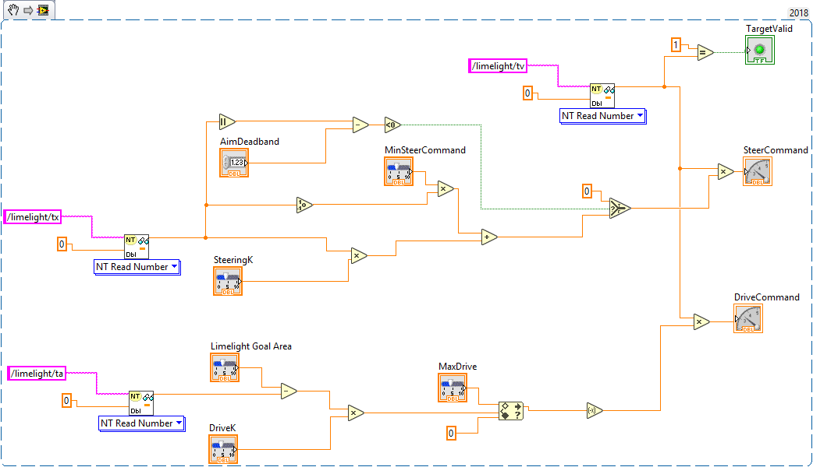You can also download the entire labview source code from this link:
<https://www.mediafire.com/file/f35w3wllbmj9yt7/DeepSpaceLabviewExample.zip/file/>`_
Using Python to create Custom OpenCV Vision Pipelines¶
Limelight has successfully exposed a large number of students to some of the capabilities of computer vision in robotics. With python scripting, teams can now take another step forward by writing their own image processing pipelines.

- Limelight handles the hardware, camera interfacing, networking, streaming, and basic image pre-processing. All you need to do is write one python function called runPipeline().
- One of the most important features we offer is the one-click crosshair. The crosshair, dual crosshair, tx, ty, ta, ts, tvert, and all other standard limelight NetworkTables readings will automatically latch to the contour you return from the python runPipeline() function.
- Write your own real-time visualizations, thresholding, filtering, and bypass our backend entirely if desired.
- Limelight’s python scripting has access to the full OpenCV and numpy libraries.
- Beyond access to the image, the runPipeline() function also has access to the “llrobot” NetworkTables number array. Send any data from your robots to your python scripts for visualization or advanced applications (One might send IMU data, pose data, robot velocity, etc. for use in python scripts)
- The runPipeline function also outputs a number array that is placed directly into the “llpython” networktables number array. This means you can bypass Limelight’s crosshair and other functionality entirely and send your own custom data back to your robots.
- Python scripts are sandboxed within our c++ environment, so you don’t have to worry about crashes. Changes to scripts are applied instantly, and any error messages are printed directly to the web interface.
Minimal Limelight Python Script¶
import cv2
import numpy as np
# runPipeline() is called every frame by Limelight's backend.
def runPipeline(image, llrobot):
# convert the input image to the HSV color space
img_hsv = cv2.cvtColor(image, cv2.COLOR_BGR2HSV)
# convert the hsv to a binary image by removing any pixels
# that do not fall within the following HSV Min/Max values
img_threshold = cv2.inRange(img_hsv, (60, 70, 70), (85, 255, 255))
# find contours in the new binary image
contours, _ = cv2.findContours(img_threshold,
cv2.RETR_EXTERNAL, cv2.CHAIN_APPROX_SIMPLE)
largestContour = np.array([[]])
# initialize an empty array of values to send back to the robot
llpython = [0,0,0,0,0,0,0,0]
# if contours have been detected, draw them
if len(contours) > 0:
cv2.drawContours(image, contours, -1, 255, 2)
# record the largest contour
largestContour = max(contours, key=cv2.contourArea)
# get the unrotated bounding box that surrounds the contour
x,y,w,h = cv2.boundingRect(largestContour)
# draw the unrotated bounding box
cv2.rectangle(image,(x,y),(x+w,y+h),(0,255,255),2)
# record some custom data to send back to the robot
llpython = [1,x,y,w,h,9,8,7]
#return the largest contour for the LL crosshair, the modified image, and custom robot data
return largestContour, image, llpython
Python Examples¶
WIP
Using Grip to create Custom OpenCV Vision Pipelines¶
- You can use GRIP to grapically design custom vision pipelines.
- Your custom vision pipeline can be loaded into a limelight and run in hardware.
Grip is a program developed by WPI for developing vision pipelines. We have added a new export option to grip which allows you to export your custom vision pipeline and run it on a limelight camera with no extra programming needed. Carefully designed Grip pipelines can run at the full 90fps framerate of the limelight camera.
The first step in using GRIP is to download our build of Grip. It can be downloaded from our downloads page. When you run GRIP, you should see a screen like this:
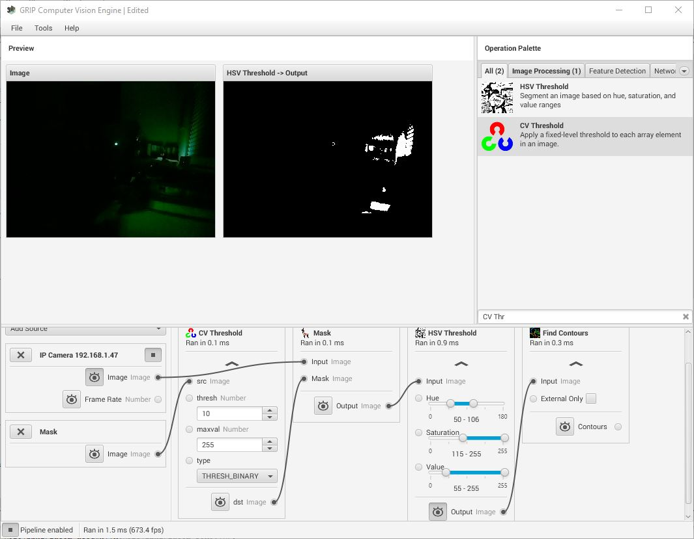You can learn more about GRIP on this web page: https://docs.wpilib.org/en/stable/docs/software/vision-processing/grip/introduction-to-grip.html
Accessing the Video Stream wthin GRIP¶
Limelight has an additional video stream on port 5802 which can be accessed primarily for use with GRIP or other applications like it. This video stream is uncompressed (or very lightly compressed) and has no cross-hair or other overlays drawn on the image. It is important to use this video stream for developing your GRIP pipeline because the normal Limelight video feed is optimized for very low bandwidth and latency which causes the image to be relatively low quality and can have significant compression artefacts. So to get your grip pipeline started, add an IP Camera input which uses the limelight as its input:
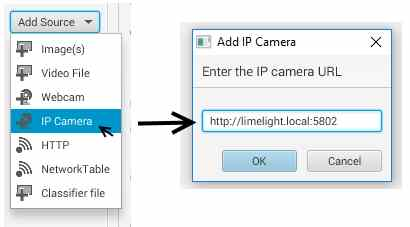How Limelight Handles Inputs to the Pipeline¶
It is important to understand how your limelight camera interfaces with the inputs to your vision pipeline. Once your pipeline is loaded into the limelight camera, its inputs will be scanned. The first input is always assumed to be the video feed from the camera so it is important that you structure your pipeline in this way. Any additional inputs to the pipeline will recieve upload buttons in the limelight UI which will allow you to upload addtional images or data files as needed by your pipeline. For now it is important to realize that the video stream should be the first input in your Grip Pipeline.
Generating output for the Limelight to use¶
When your grip pipeline is loaded onto the limelight, it will also be scanned for output data in the form of contours, blobs, or rectangles. If any of these outputs are found, the last one in the pipeline will be used as the ‘results’ of your vision pipeline. The outputs of your pipeline will be passed through the built-in contour filtering system on the limelight. If you want to do your own contour filtering within your GRIP pipeline, just set the limelight options to essentially accept any contour. In the example shown below, the output of the block highlighted in red would be passed on to the limelight targetting system. Notice that this example pipline produces contours at an intermediate step and then filters them. Only the final set of contours (or blobs or rectangles) will be passed on to the limelight targetting system.
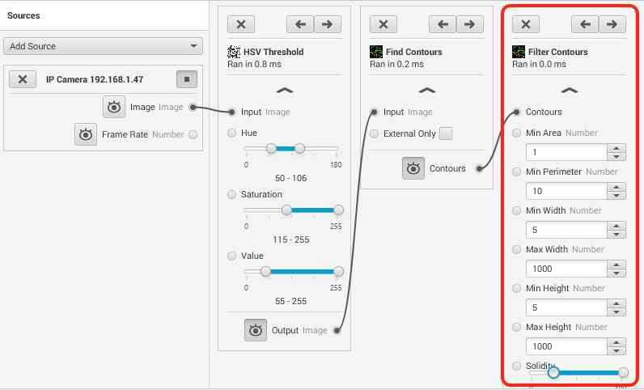Code Generation for Limelight¶
When you are ready to try running your pipeline in hardware on the limelight, it is time to use the code-generation function of GRIP. We have added a new “Limelight” code generation target to the GRIP application. Using this option will produce a <pipeline>.ll file which can be loaded into the limelight camera.
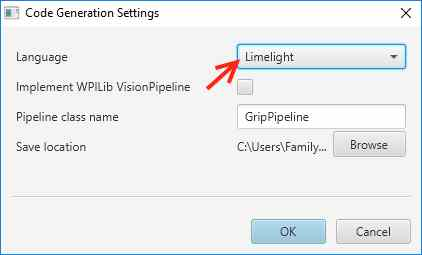Running GRIP Pipelines on Limelight¶
- Upload your custom GRIP pipeline into a limelight pipeline.
- Upload any additional inputs to your pipeline.
- Observe the behavior of your GRIP pipeline.
Once you have used GRIP to design a custom vision pipeline and exported your pipeline to a .LL file, it is time to run it on the limelight camera hardware. The first step is to select which limelight pipeline you’d like to load your grip pipeline into. In order to do this, you use the UI at the top of the limelight interface to select a pipeline. Normally your robot (through network-tables) controls the currently active pipeline. Our first step is to disable that functionality so that we can select the pipeline to edit:
Next, change the currently active pipeline using the dropdown box highlighted below.
Next use the ‘Upload’ button to load your .LL file into this limelight pipeline.
And finally, change the pipeline mode from “LimeLight Standard” to “GRIP”.
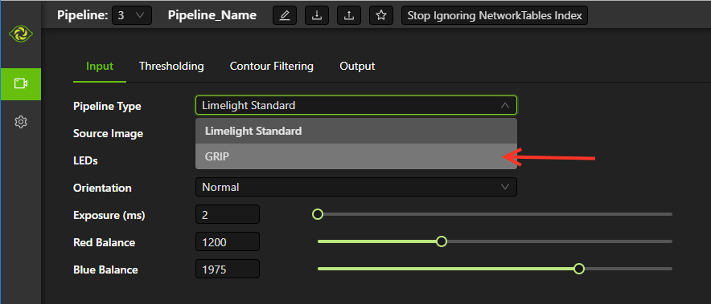Once you have loaded a Grip pipeline, the UI changes slightly. In place of the ‘Thresholding’ tab, you will have a ‘GRIP’ tab. If your GRIP pipeline uses more than just the video feed as an input, you will have a list of additional inputs as shown below with upload buttons for uploading images or other data into them.
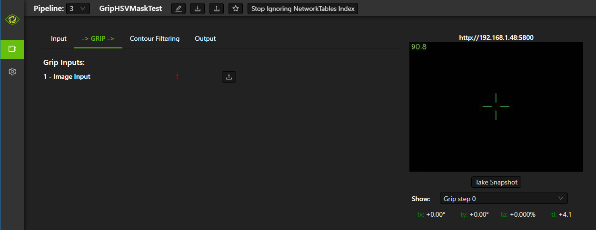In addition, the video feed will have new options for displaying any intermediate images generated by your GRIP pipeline.
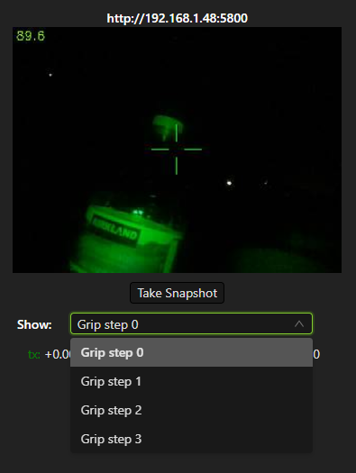When you are using a GRIP pipeline, the settings on the Input, ContourFiltering, and Output tabs are still fully functional. If you would prefer to do your contour filtering within GRIP, you can simply “open up” all of the limelight contour filtering options to allow all contours to pass through.
Frequently Asked Questions¶
Why is limelight using a low (320x240) resolution?¶
Using a lower resolution allows us to run the vision pipeline at a high framrate. Limelight provides tracking data fast enough to use its outputs to directly drive a PID loop on your robot. This makes integrating vision into your robot extremely simple; limelight is just another sensor! Additionally, we have used even lower resolutions for the past two years in FRC. In our final event (China), our 2016 robot never mis-aimed a shot while using 160x120 resolution and aiming at one of the most difficult targets FRC has used to-date (the high goal in stronghold). All of its shots were auto-aimed; it was impossible to manually aim that robot.
What if the game calls for a different tracking algorithm?¶
We believe that Limelight will give you the tools to solve the vision tracking challenge for any FRC game. However if some challenge comes up which we have not anticipated, we will add the features needed for you to track the new type of target.
Why is there an extra usb port?¶
You can add a usb camera to limelight to act as a secondary driver or backup camera. The second camera stream will automatically appear alongside the primary camera stream. Limelight’s video stream uses very little bandwidth so you can safely use this feature for a competitive advantage.
How do I view the video stream?¶
The video stream exists at http://<Limelight’s IP address or limelight.local>:5800. Stream info is also posted to network tables so SmartDashbaord and Shuffleboard (test LV dashboard) will automatically find it.
Are the eight LEDs bright enough?¶
The total light output of the LEDs is 400 lumens, and the LED cones actually increase the illuminance (functional light) of the device. To compare, the common two-ring setup has a total output of roughly 250 lumens.
Does Limelight support protocols other than NetworkTables?¶
Limelight also streams tx, ty, ta, and ts over the Serial (UART) pins at the back of the enclosure.
Does Limelight support Active PoE?¶
Limelight only supports passive PoE. Active POE requires a handshake between the sending and receiving POE devices. Limelight is designed to work with a passive POE injector. Just supply 12V by wiring the passive POE injector right into your PDP.
Should I plug Limelight into our VRM (Voltage Regulator Module)?¶
Limelight is designed to be connected to the main robot battery. It contains its own voltage regulators.
My robot has extreme voltage swings while driving, will this damage my Limelight?¶
We specifically designed Limelight to handle the “noisy” power available on a typical FRC robot. It contains the voltage regulators needed to generate the voltages it needs to operate as long its input voltage is above 6V.
Will Limelight’s LEDs dim when our robot’s voltage drops?¶
We designed the LED array on Limelight to produce a consistent brightness all the way down to 7.5V. So your tracking should remain consistent even when your robot motors are putting a heavy load on the battery. This can be an important feature for robots with high-traction drivetrains that aim by turning in place.
Additional Resources¶
Team 254 Vision Talk¶
Team 254 gave an this excellent talk on how to do vision tracking using an android phone! Their talk is packed with very good information on the theory and implementation of vision tracking. https://www.youtube.com/watch?v=rLwOkAJqImo
WPI Vision Processing Resources¶
These pages are loaded with information on various ways to implement your own vision processing pipeline. https://docs.wpilib.org/en/stable/docs/software/vision-processing/index.html
GRIP¶
Grip is a tool that lets you build OpenCV pipelines using a drag-and-drop GUI. https://docs.wpilib.org/en/stable/docs/software/vision-processing/grip/introduction-to-grip.html
Software Change Log¶
Contact us or post to CD to suggest upgrades for Limelight!
2022.2.3 (3/16/22)¶
Bugfixes and robot-code crop filtering.
Bugfixes¶
- Fix “stream” networktables key and Picture-In-Picture Modes
- Fix “snapshot” networktables key. Users must set the “snapshot” key to “0” before setting it to “1” to take a screenshot.
- Remove superfluous python-related alerts from web interface
Features and Changes¶
- Manual Crop Filtering
- Using the “crop” networktables array, teams can now control crop rectangles from robot code.
- For the “crop” key to work, the current pipeline must utilize the default, wide-open crop rectangle (-1 for minX and minY, +1 for maxX and +1 maxY).
- In addition, the “crop” networktable array must have exactly 4 values, and at least one of those values must be non-zero.
2022.2.2 (2/23/22)¶
Mandatory upgrade for all teams based on Week 0 and FMS reliability testing.
Bugfixes¶
- Fix hang / loss of connection / loss of targeting related to open web interfaces, FMS, FMS-like setups, Multiple viewer devices etc.
Features and Changes¶
- Crop Filtering
Ignore all pixels outside of a specified crop rectangle
If your flywheel has any sweet spots on the field, you can make use of the crop filter to ignore the vast majority of pixels in specific pipelines. This feature should help teams reduce the probability of tracking non-targets.
If you are tracking cargo, use this feature to look for cargo only within a specific part of the image. Consider ignoring your team’s bumpers, far-away targets, etc.

- Corners feature now compatible with smart target grouping
This one is for the teams that want to do more advanced custom vision on the RIO
“tcornxy” corner limit increased to 64 corners
Contour simplification and force convex features now work properly with smart target grouping and corner sending

IQR Filter max increased to 3.0
Web interface live target update rate reduced from 30fps to 15fps to reduce bandwidth and cpu load while the web interface is open
2022.1 (1/25/22)¶
Bugfixes¶
- We acquired information from one of our suppliers about an issue (and a fix!) that affects roughly 1/75 of the CPUs specifically used in Limelight 2 (it may be related to a specific batch). It makes sense, and it was one of the only remaining boot differences between the 2022 image and the 2020 image.
- Fix the upload buttons for GRIP inputs and SolvePNP Models
Features¶
- Hue Rainbow
The new hue rainbow makes it easier to configure the hue threshold. Here’s an example of filtering for blue pixels:

- Hue Inversion
The new hue inversion feature is a critical feature if you want to track red objects, as red is at both the beginning and the end of the hue range:
If you’re trying to track cargo, the aspect ratio filter (set a tight range around “1”) and the fullness filter (you want above 70%) should work quite well. Explicit “circle” filtering is relatively slow and wont work as well as people assume.
-
- New Python Libraries
- Added scipy, scikit-image, pywavelets, pillow, and pyserial to our python sandbox.
2022.0 and 2022.0.3 (1/15/22)¶
This is a big one. Here are the four primary changes:
Features¶
- Smart Target Grouping
Automatically group targets that pass all individual target filters.
Will dynamically group any number of targets between -group size slider minimum- and -group size slider maximum-
-
- Outlier Rejection
While this goal is more challenging than other goals, it gives us more opportunities for filtering. Conceptually, this goal is more than a “green blob.” Since we know that the goal is comprised of multiple targets that are close to each other, we can actually reject outlier targets that stand on their own.
You should rely almost entirely on good target filtering for this year’s goal, and only use outlier rejection if you see or expect spurious outliers in your camera stream. If you have poor standard target filtering, outlier detection could begin to work against you!
-
- Limelight 2022 Image Upgrades
We have removed hundreds of moving parts from our software. These are the results:
- Compressed Image Size: 1.3 GB in 2020 → 76MB for 2022 (Reduced by a factor of 17!)
- Download time: 10s of minutes in 2020 → seconds for 2022
- Flash time: 5+ minutes in 2020 → seconds for 2022
- Boot time: 35+ seconds in 2020 → 14 seconds for 2022 (10 seconds to LEDS on)
- Full Python Scripting
Limelight has successfully exposed a large number of students to some of the capabilities of computer vision in robotics. With python scripting, teams can now take another step forward by writing their own image processing pipelines.
- Limelight handles the hardware, camera interfacing, networking, streaming, and basic image pre-processing. All you need to do is write one python function called runPipeline().
- One of the most important features we offer is the one-click crosshair. The crosshair, dual crosshair, tx, ty, ta, ts, tvert, and all other standard limelight NetworkTables readings will automatically latch to the contour you return from the python runPipeline() function.
- Write your own real-time visualizations, thresholding, filtering, and bypass our backend entirely if desired.
- Limelight’s python scripting has access to the full OpenCV and numpy libraries.
- Beyond access to the image, the runPipeline() function also has access to the “llrobot” NetworkTables number array. Send any data from your robots to your python scripts for visualization or advanced applications (One might send IMU data, pose data, robot velocity, etc. for use in python scripts)
- The runPipeline function also outputs a number array that is placed directly into the “llpython” networktables number array. This means you can bypass Limelight’s crosshair and other functionality entirely and send your own custom data back to your robots.
- Python scripts are sandboxed within our c++ environment, so you don’t have to worry about crashes. Changes to scripts are applied instantly, and any error messages are printed directly to the web interface.
This update is compatible with all Limelight Hardware, including Limelight 1.
Known issues: Using hardware zoom with python will produce unexpected results.
2022.0.3 restores the 5802 GRIP stream, and addresses boot issues on some LL2 units by reverting some of the boot time optimizations. Boot time is increased to 16 seconds.
2020.4 (3/11/20)¶
2020.4 is another critical update that eliminates the intermittent 2-4 second crash that could occur during an abrupt mjpeg stream disconnection. This often happened at the very end of the match, and in some cases could happen during matches.
2020.3 (2/25/20)¶
2020.3 is a critical update that addresses intermittent networking-related software restarts, and addresses a crash that would occur upon USB camera disconnection.
2020.2 (1/30/20)¶
2020.2 pushes Limelight’s hardware even further by adding the ability to pan and zoom to any point. It also adds a brand new video mode and important bug fixes. Let us know what features you would like to see in future updates!
Features¶
3x Hardware Zoom at 60 FPS
Our last update added 2x Hardware Zoom for all Limelight models at no cost whatsoever. We’ve managed to push our hardware zoom even further with 3x Hardware Zoom. All Limelight models are now capable of 3x Hardware Zoom at 60fps. This makes full-court tracking even easier for every team.
The following gif shows 1x, 2x, and 3x Hardware Zoom from the sector line (full court shot line):

This gif shows only 1x and 3x Hardware Zoom from the full-court sector line shot location:

Hardware Panning
Robots capable of shooting from both long and short distances in 2020 would have found it difficult to use Hardware Zoom on their Limelights without the use of an active, adjustable Limelight mount. We have incorporated Hardware Panning to solve this problem.
This gif shows Hardware Panning while using 3x Hardware Zoom. This should simplify mounting for teams who wish to use Hardware Zoom:

Hardware Panning on the X and Y axes at 3x Hardware Zoom

Bugfixes¶
- Address driver issues that were breaking the color balance sliders
- Revert all networking-related drivers to 2019 season variants to address a small number of network performance reports from teams
2020.1 (1/16/20)¶
2020.1 adds one of Limelight’s coolest features yet: 2x Hardware Zoom. This is not digital zoom, and it is now enabled for all Limelight versions.
Features¶
2x Hardware Zoom
Not Digital zoom
Enable 2x Hardware zoom to achieve vastly improved tracking at long range, and stable tracking at full-court distances.
This feature comes with absolutely no latency or framerate cost - tracking continues to execute at 90fps with no additional overhead.
Zoom from the autonomous starting line (~127” away):
-
Zoom from the front of the trench run (~210” away):

Zoom from the front of the color wheel (~310” away):

Zoom from the very back of the trench run (~420” away):

Zoom from the sector line (nearly full-court):

Manual Crosshairs
Manually adjust single and dual crosshair locations with sliders in the web interface

New SolvePNP / 3D features (Still experimental)
We have added the “Force Convex” option to use only the outermost points of a target - this is necessary in 2020 due to the thin tape used for the hexagonal target.

The “bind target” option has been added. This feature binds “tx” and “ty” to the 3D target. This is required to guide robots to score using 3D targets.

Finally, add the “Goal Z-Offset” option to automatically offset your desired target location in 3D space on the Z-axis.
In Infinite Recharge, the “Goal Z-Offset” would be used to track the center of the small, circular goal behind the hexagonal goal.

SolvePnP is still an experimental feature! We believe there are creative ways to play this game without SolvePnP, but we will continue to improve this feature.
Color sensing with “tc”
- Read the new “tc” array in Network Tables to obtain Red, Green, and Blue values at the crosshair’s location. Adjust “Blue Balance” and “Red Balance” on the input tab to achieve perfect color sensing.
Bugfixes¶
- USB Camera functionality broken in 2020.0 is now fixed in 2020.1
- SolvePnP functionality broken in 2020.0 is now fixed in 2020.1
- SolvePnP properly uses the model center as the axis visualization center
2019.7 (4/5/19)¶
2019.7 adds two new features.
Features¶
160x120 30fps streaming
Smoother, lower-bandwidth streaming for teams that use wide-angle USB cameras. Our 180-degree camera stream bandwidth dropped from ~3.7mbps to ~1.8 mbps.
Change the stream resolution in the settings tab.
- Changing the stream resolution on a Limelight with a wide-angle USB camera attached. No Picture-in-Picture, and normal stream rate.
- 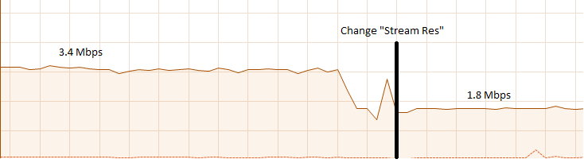
Smart Speckle Rejection
Teams that have mounted their cameras in-line with the target this year have had to deal with unwanted LED reflections.
The area slider does not always solve this problem, as teams want to track small vision targets at large distances.
This new feature will automatically reject relatively small contours that have passed through all other filters.
As a robot moves away from a vision target (decreasing its size), SSR will automatically adjust to only reject relatively small contours.
-
Changes¶
Tooltips
Tooltips are now avaiable on some Limelight controls

2019.6.1 Hotfix (3/14/19)¶
2019.6.1 fixes Grip uploads.
2019.6 (3/12/19)¶
2019.6 is all about reliability.
Bugfixes¶
USB Cameras
- Address issue that could cause some USB cameras to fail on boot.
FMS
- Make Limelight more (if not completely) resistant to FMS restarts and field / laptop networking changes.
- Limelight will no longer hang after a sudden client networking change.
Raw Contour Sorting (BREAKING CHANGE)
- Intersection filters no longer affect raw contour sorting.
Smartdashboard auto-posting
*LL auto-posts certain pieces of information to SmartDashboard (IP Address, Interface url, etc.). The names of these values now contain the hostname.
Features & Changes¶
- Significantly increase precision and stability of the compute3d feature. Translation and rotation measurements are stable at larger distances.
- Max Black Level Offset increased to 40 (from 25) for even darker images.
- New “Closest” sort options in the “Output” tab while “Dual Crosshair” mode is enabled.
- Standard - Current “closest” sorting implementation with “Dual Crosshair” mode.
- Standard V2 - Experimental, smart “closest” sorting implementation with “Dual Crosshair” mode.
- Average of Crosshairs - “Closest” sort origin with “Dual Crosshair” mode is the average of the two crosshairs.
- Crosshair A - “Closest” sort origin with “Dual Crosshair” mode is crosshair A.
- Crosshair B - “Closest” sort origin with “Dual Crosshair” mode is crosshair B.
- New “LED Mode” pipeline options: “Left Half”, “Right Half”
- Floating-point raw corner values while compute3D is enabled.
- Hide image decorations while using magic wands
- Larger stream in web interface
2019.5 (2/9/19)¶
With 2019.5 we are introducing the brand new compute3D camera localization feature. Only a handful of teams have ever attempted to add this feature to their vision systems, and now it is available to all Limelight 1 and Limelight 2 users.
This is not a silver bullet for this year’s game. We highly recommend thinking of creative ways to use the standard high-speed 90 fps tracking unless this feature is absolutely necessary.
All example gifs were created with an LL2 mounted on the side of a kitbot. This is why you will see slight changes in translation during turns.
Features¶
High-Precision Mode and PnP
- In the following gif, a Limelight 2 was placed 37 inches behind and 14.5 inches to the right of the target.
- The Limelight was later turned by hand. Notice how the distances remain mostly unchanged:
With 2019.4, we introduced corner sending. This allowed advanced teams to write their own algorithms using OpenCV’s solvePNP(). With 2019.5, this is all done on-board.
Upload a plain-text csv file with a model of your target. We have pre-built models of 2019 targets hosted on our website. All models must have a centered origin, and use counter-clockwise point ordering with inch scaling.
Enable the new high-res 960x720 mode, and then enable “Solve 3D” to aquire the position and rotation of your Limelight relative to your target.
Corner numbers are now displayed on the image for easier model creation and threshold tuning.
Read all 6 dimensions of your camera’s transform (x,y,z,pitch,yaw,roll) by reading the “camtran” networktable number array.
Black Level
With the new black level slider, thresholding is even easier. Increase the black level offset to further darken your images.


{kind=link}
{kind=link}
Breaking Changes¶
- The reported vertical FOV for LL2 has been fixed to match the listed value of 49.7 degrees. This will change your “ty” values
Bug Fixes¶
- Fix stream-only crash that could occur when fisheye USB cameras were attached.
- Fix rare hang caused by networking-related driver.
- Corner approximation is now always active.
2019.4 (1/26/19)¶
We believe all critical bug reports are covered with this release.
Features¶
Corners
- Send the corners of your target as two arrays (tcornx, tcorny) *NOW tcornxy by enabling “send corners” in the “Output” tab. This will further enable teams that are interested in advanced pipelines with methods like solvePNP().
- Adjust corner approximation with the “corner approximation” slider in the “Output” tab.
Bug Fixes¶
- Fix hang + rare crash that would occur when two targets had exactly the same area, x coordinate, or y coordinate.
- Fix area calculation in dual- and tri-target modes.
- Optimize contour sorting for better performance.
2019.3 (1/19/19)¶
2019.3 addresses a number of bugs and feature requests.
Features¶
Stream Rate (bandwidth reduction)
- Set the stream rate to “low” in the settings page for a lower-bandwidth 15fps video stream.
Raw Contours disabled in NetworkTables (bandwidth reduction)
- Raw contours are now disabled by default. This will further reduce Limelight’s overall bandwidth.
- There are now ~180 fewer networktables entries submitted per second by default.
- See the new “Raw Contours” pipeline option in the “Output” tab to re-enable raw contours.
Active Pipeline Index
- Read the networktable key “getpipe” to get the true active pipeline index of the camera. This is updated at 90hz.
- The active pipeline index is now written to the videostream underneath the FPS display.
Left and Right Intersection Filters
- Teams may now choose between “left” and “right” dual-contour intersection filters. The “above” and “below” intersection filters were added in 2019.2.
Bug Fixes¶
- Fix LabView Dashboard streaming bug introduced in 2019.2
- The webpage no longer requests icon fonts from a the internet. All fonts are stored locally. This should speed up interface loading.
- Reduce “driver mode” exposure.
- Fix “Distance Transform” GRIP implementation
- Fix 20-second communication delays caused by changing the hostname.
2019.2 (1/7/19)¶
2019.2 adds new features to better equip teams for the 2019 season.
Intersection Filter
-
The all-new intersection filter will allow teams to better distinguish between different groups of contours. The filter extends contours to infinity, and checks where they would intersect.
Direction Filter

The new direction filter will allow teams to better distinguish between contours of different orientations.
Additional Changes and Fixes
- IP Address is auto-posted to SmartDashboard/Shuffleboard for easier event troubleshooting. We have had almost no reports of this being an issue, but this serves as another contingency feature.
- Pipeline name is auto-posted to SmartDashboard/Shuffleboard
- Access the width and height of the rough bounding box in pixels with new networktables keys.
- Access the longest side and shortest side of the perfect bounding box in pixels with new networktables keys.
- “Sort Mode” now applies to dual-contours
- “Sort Mode” is now fixed
- 5802 stream is less taxing on the camera
2019.1 (12/18/18)¶
2019.1 fixes all major bugs reported during the beta
- Performance is back to a steady 90fps. A driver issue was the root cause of our performance problems during beta
- IP and hostname settings actually apply and “stick”
- Magic Wands have been re-ordered to match those of Limelight 2018 software
- We now support Grip inputs like masks through the web interface
- NetworkTables freeze fixed
2019.0 (12/10/18)¶
With 2019, we are introducing GRIP support, a brand-new interface, and a cleaner flashing procedure.
Grip Support
- Build pipelines with GRIP For Limelight, and export “LL Script” files to upload to your camera.
- Masks and NetworkTables support will be added in a future update
- Expose a bare video stream at http://<limelighturl>:5802 for testing in grip
All-new web interface
- Smaller controls
- More tooltips
- Add the ability to turn off the LEDs from the interface
- Move display combobox underneath stream for easier display switching
- Faster communication to Limelight. New web tech allowed us to simplify other parts of our code.
Flashing
- We have migrated to “Balena Etcher”
- Etcher is twice as fast and works on all platforms
- Flash popups are fixed with the migration.
Other
- The LED Mode has been modified to allow for pipeline-specific LED Modes. LED MODE 0 is now “pipeline mode”, while mode 1 is “force off”
- Faster boot times in automatic IP assignment mode.
- Optimizations and minor bug fixes
2018.5 (3/28/18)¶
2018.5 fixes a critical issue that would prevent users from tuning pipelines on snapshots.
2018.4 (3/19/18)¶
2018.4 adds new contour sorting options. These are fairly important for cube tracking this year, as teams don’t necessarily want to track the largest cube in view. In many cases, teams want to track the cube that is closest to their intakes. Many users have had to use the raw contours feature to implement their own sorting, so we want to make this as easy as possible.
Contour Sort Mode
Select between “largest”, “smallest”, “highest”, “lowest”, “leftmost”, “rightmost”, and “closest” sort options.
We feel that many teams will make use of the “closest” option for cube tracking.

2018.3 (2/28/18)¶
2018.3 fixes a major networktables reconnection bug which would cause NetworkTables settings changes to not propagate to Limelight. Thanks to Peter Johnson and the WPILib team for pinpointing and fixing the underlying NT bug. This was (as far as we know) the last high-priority bug facing Limelight.
Settings changes such as ledMode, pipeline, and camMode should always apply to Limelight. You should no longer need workarounds to change Limelight settings while debugging, after restarting robot code, and after rebooting the roborio.
Changes¶
Fix major NT syncing issue which broke settings changes (ledMode, pipeline, and camMode) during LabView debugging, and after a reset/reboot of the roborio.
Eye-dropper wand:
- The eye dropper wand uses the same 10 unit window for Hue, but now uses a 30 unit window for saturation and value. This means that thresholding is more often a one-click operation, rather than a multi-step process.
Snapshots
Setting the snapshot value to “1” will only take a single snapshot and reset the value to 0. Snapshotting is throttled to 2 snapshots per second.
Snapshot limit increased to 100 images.
Snapshot selector area is now scrollable to support 100 images.

2018.2 (2/10/18)¶
2018.2 fixes all known streaming bugs with various FRC dashboards. It also makes Limelight easier to tune and more versatile during events.
Features¶
Thresholding wands
Setup HSV threshold parameters in a matter of clicks
The “Set” wand centers HSV parameters around the selected pixel
The “Add” wand adjusts HSV parameters to include the selected pixel

The “Subtract” wand adjusts HSV paramters to ignore the selected pixel

Snapshots

Snapshots allow users to save what Limelight is seeing during matches or event calibration, and tune pipelines while away from the field.
Save a snapshot with the web interface, or by posting a “1” to the “snapshot” NetworkTables key
To view snapshots, change the “Image Source” combo box on the input tab. This will allow you to test your pipelines on snapshots rather than Limelight’s camera feed
Limelight will store up to 32 snapshots. It will automatically delete old snapshots if you exceed this limit.
New Streaming options
- We’ve introduced the “stream” NetworkTables key to control Limelight’s streaming mode. We’ve received requests for PiP (Picture-in-Picture) modes to better accomodate certain dashboards.
- 0 - Standard - Side-by-side streams if a webcam is attached to Limelight
- 1 - PiP Main - The secondary camera stream is placed in the lower-right corner of the primary camera stream.
- 2 - PiP Secondary - The primary camera stream is placed in the lower-right corner of the secondary camera stream.
Increase streaming framerate to 22fps
- Look out for faster streams in an upcoming update
Erosion and Dilation
- Enable up to one iteration of both erosion and dilation.
- Erosion will slightly erode the result of an HSV threshold. This is useful if many objects are passing through a tuned HSV threshold.
- Dilation will slightly inflate the result of an HSV threshold. Use this to patch holes in thresholding results.
Restart Button
- Restart Limelight’s vision tracking from the web interface. This is only useful for teams that experience intermittent issues while debugging LabView code.
Optimizations¶
- Drop steady-state pipeline execution time to 3.5-4ms.
Bug Fixes¶
- Fix Shuffleboard streaming issues
- Fix LabView dashboard streaming issues
2018.1 (1/8/18)¶
- Red-Balance slider
- Blue-Balance slider
- Better default color balance settings
- Increased max exposure setting
2018.0 (1/3/18)¶
On top of a ton of new case studies, more detailed documentation, and a full example program for an autonomous STEAMWORKS shooter, the software has received a major upgrade.
Features¶
New Vision Pipeline interface:
-
Add up to 10 unique vision pipelines, each with custom crosshairs, thresholding options, exposure, filtering options, etc.
Name each vision pipeline.
Mark any pipeline as the “default” pipeline.
Instantly switch between pipelines during a match with the new “pipeline” NetworkTables value. This is useful for games that have multiple vision targets (eg. the gear peg and boiler from 2017). This is also useful for teams that need to use slightly different crosshair options per robot, field, alliance, etc.
Download vision pipelines from Limelight to backup or share with other teams.
Upload vision pipelines to any “slot” to use downloaded pipelines.
- Target “Grouping” option:
Instantly prefer targets that consist of two shapes with the “dual” grouping mode”. “Single” and “Tri” options are also available

- New Crosshair Calibration interface:
- “Single” and “Dual” crosshair modes.
- “Single” mode is what Limelight utilized prior to this update. Teams align their robots manually, and “calibrate” to re-zero targeting values about the crosshair.
- “Dual” mode is an advanced feature for robots that need a dynamic crosshair that automatically adjusts as a target’s area / distance to target changes. We’ve used this feature on some of our shooting robots, as some of them shot with a slight curve. This feature will also be useful for robots with uncentered andor misaligned Limelight mounts.
- Separate X and Y calibration.
Add Valid Target “tv” key to Network Tables.
Add Targeting Latency “tl” key to Network Tables. “tl” measures the vision pipeline execution time. Add at least 11 ms for capture time.
Draw additional rectangle to help explain aspect ratio calculation.
Remove throttling feature, and lock Limelight to 90fps.
Disable focusing on most web interface buttons. Fixes workflow problem reported by teams who would calibrate their crosshairs, then press “enter” to enable their robots.
- Post three “raw” contours and both crosshairs to Network Tables.
- Access a raw contour with tx0, tx1, ta0, ta1, etc.
- Access both raw crosshairs with cx0, cy0, cx1, cy1.
- All x/y values are in normalized screen space (-1.0 to 1.0)
Add “suffix” option to web interface. Allows users to add a suffix to their Limelights’ hostnames and NetworkTables (e.g. limelight-boiler). This feature should only be utilized if teams intend to use multiple Limelights on a single robot.
Display image version on web interface
Optimizations¶
- Decrease networking-related latency to ~0.2 ms from ~10ms (Thanks Thad House)
- Move stream encoding and jpg compression to third core, eliminating 10ms hitch (25 - 30ms hitch with two cameras) seen every six frames.
- Drop steady-state pipeline execution time to 5ms with SIMD optimizations.
- New Latency testing shows 22 ms total latency from photons to targeting information.
- Upgrade Network Tables to v4 (Thanks Thad House)
- Optimize contour filtering step. Latency no longer spikes when many contours exist.
- Much improved hysterisis tuning.
- Significantly improve responsiveness of webinterface<->limelight actions.
Bugfixes¶
- Fix minor area value inaccuracy which prevented value from reaching 100% (maxed ~99%).
- Fix half-pixel offset in all targeting calculations
- Fix camera stream info not populating for NT servers started after Limelight’s boot sequence. Regularly refresh camera stream info.
- Fix bug which caused aspect ratio to “flip” occasionally.
- Force standard stream output (rather than thresholded output) in driver mode.
- Fix bug which prevented LEDs from blinking after resetting Networking information
2017.7 (11/21/17)¶
- Improved contour sorting. Was favoring small contours over larger contours.
- New Coordinate system: Center is (0,0). ty increases as the target moves “up” the y-axis, and tx increases as the target moves “right” along the x-axis.
- More accurate angle calculations (Pinhole camera model).
- Display targeting info (tx, ty, ta, and ts) on webpage
- Default targeting values are zeros. This means zeros are returned if no target is in view.
- New side-by-side webpage layout. Still collapses to single column on small devices.
- Continuous slider updates don’t hurt config panel performance.
- Aspect ratio slider scaled such that 1:1 is centered.
2017.6 (11/13/17)¶
- New Imaging tool. Tested on Win7, Win8 and Win10.
- Post camera stream to cameraserver streams. Works with smart dashboard camera streams, but shuffleboard has known bugs here
- Quartic scaling on area sliders, quadratic scaling on aspect ratio sliders. This makes tuning much easier
- Organize controls into “input”, “threshold”, “filter”, and “output” tabs
- Continuous updates while dragging sliders
- Area sent to NT as a percentage (0-100)
- Image size down to 700MB from 2.1GB
2017.5 (11/9/17)¶
- Image size down to 2.1GB from 3.9GB
- Add driver mode and led mode apis
- Set ledMode to 0, 1, or 2 in the limelight table.
- Set camMode to 0 or 1 in the limelight table.
- Add ability to toggle between threshold image and raw image via web interface (will clean up in later release)
- Post camera stream to network tables under CameraPublishing/limelight/streams (will need a hotfix)
- Add skew to targeting information (“ts” in limelight table)
- Add base “CommInterface” in anticipation of more protocols
2017.4 (10/30/17)¶
- Lots of boot and shutdown bullet-proofing
2017.3 (10/25/17)¶
- Hue range is 0-179 from 0-255
- Decrease max log size, clear logs, clear apt cache
2017.2 (10/23/17)¶
- Manual ISO sensitivity
- Minimum exposure increased to 2
2017.1 (10/21/17)¶
- Optimizations
- “Convexity” changed to “Fullness”
- Exposure range set to 0-128 ms from 0-255 ms
- Support two cameras
- Fully support single-point calibration